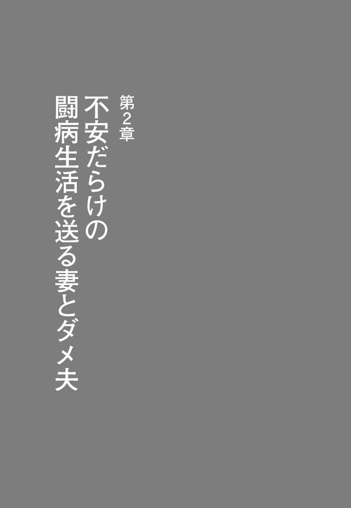

| 娘はまだ６歳、妻が乳がんになった―ドキュメント「妻ががんになったら」 | |
| 桃山 透 | |
| (2016) | |
はじめに
妻が乳がんになったのは、41歳のときです。娘はまだ６歳。小学校に上がったばかりでした。まさに青天の霹靂で、妻の闘病をどうサポートしていけばいいのか、よくわかりませんでした。また、妻のがんは治るのか、闘病にはいくらかかるのかなどの不安に襲われてしまいました。そして、妻の不運を嘆かずにはいられませんでした。あまりにも厳しすぎる現実から、逃げ出したくなることは一度や二度ではありませんでした。
このようにダメ夫である私は、妻をサポートしていく自信がなかったのです。これはいまでも変わりません。
ところが、がんで闘病している人のことを書いた本を読んだり、テレビで見たりすると、その家族が素晴らしいことがほとんどです。特にサポートするパートナーが素晴らしく、だからこそ、読者や視聴者が感動し、励まされるのだと思います。
ただ、ダメ夫である私からすれば、世の中のがんで苦しんでいる家族は、本当に皆、立派なのだろうか？ 素晴らしいのだろうか？ と考えてしまい、不安になることがあります。特にサポートするパートナーは皆、本やテレビの人たちのようにできているのか、と考えると、ますます自分がダメ夫のように思えて仕方がなくなります。
たしかに私はダメ夫ですが、必死になって妻をサポートしています。家事の手伝いも、かなりしているほうだと思います。けれども、きちんとサポートできているのかといえば、決してそうとはいえません。本やテレビの人たちの足元にも及ばないのです。
ただ、私ほどではないにしても、ちょっとダメな人というのは、少なくないように思えます。本やテレビの人たちのように、闘病しているパートナーをちゃんとサポートできている人は、それほど多くないような気がしてならないのです。
がんで闘病している妻をサポートしていて痛感するのは、お金がなければ、どんなに妻のことを思っていても、そんな思いはなんの役にも立たないことが結構ある、ということです。残念ながらお金がなければ、単なるきれいごとになってしまうことが少なくないのです。これは、かなりつらいものがあります。
こんなことを書くと、「そんなことはない！」と怒りだす人もいるでしょう。ところが、妻を思う気持ちが、だれにも負けなかったとしても、お金がなければ、借金でもしない限り、妻に満足のいく治療を受けさせることはできません。残り少ないかもしれない妻の人生を、潤おすこともできないのです。
悲しいかな、これが現実だと思うのです。
もちろんお金さえあれば、闘病しているパートナーをきちんとサポートできるようになる、といっているわけではありません。ただ、厳しすぎる現実を知っておかないと、大変なことになることも知ってもらいたいのです。
この本では、私のダメっぷりを正直に書いてみました。呆れてしまう人も少なくないと思いますが、「自分のほうがマシ」「桃山のようにならないよう、気をつけよう」と思っていただければ幸いです。それがこの本の役割だと思っているくらいです。
また、闘病の渦中にいる方が私のダメっぷりを知って、自分のパートナーの素晴らしさに気づくきっかけになってくれればいい、とも思っています。
すべてのがん闘病者とその家族が、１日でも多く笑顔でいられる日が増えることを願ってやみません。
目次
Ⅹデーが来るまで
「対岸の火事」だった
日本は世界トップクラスの「がん大国」で、２人に１人が「がん」になり、３人に１人が「がん」で死ぬ──。
こんな数字を知ったところで、高齢者でない限り、危機感をもつ人は意外と少ないのではないでしょうか。私の周りの人たちを見ている限り、そう思ってしまいます。両親や兄弟を若くしてがんで亡くしている人でなければ、まさに「対岸の火事」で、ましてや30代、40代の人ならまだ先の心配ごと、気をつけるのは50歳になってから、もしくは定年退職後からでも遅くはない、と考える人が多いように思われます。
夫婦のどちらかが、いつ「がん」になっても不思議ではない時代──。
こう言い換えても、30代、40代の夫婦なら、ピンとこないかもしれません。
私も例外ではありませんでした。だから47歳になったいまでも、健康には自信がないというのに、自分だけはだいじょうぶだろう、と思っているところがあるのでしょう。そのため、健康が気になりながらも、夜更かしは当たり前で、脂っこい食べ物や甘い物を好み、腹八分を心がけるどころか、ときには暴飲暴食をし、たばこもやめられないメタボ中年です。６年ほど前に胆のうが原因不明の炎症を起こして壊死し、摘出手術を受けたというのに、です。
国立がん研究センターの２０１０年のデータによると、50歳までにがんになる人は男性で２％、女性で３％しかいません。２人に１人が「がん」になるというのは、60歳以降にがんになる人が多いからなのです。
これらのことから、とにかくストレスを溜めることなく日々の仕事をきちんと仕上げ、稼ぐのが最優先、そのためには多少の不摂生も仕方がない、と思っているのです。ストレスほど心身ともに悪いものはない、と思い込んでいるのです。
先行き不透明なこの時代、私のように思っている人はめずらしくないでしょう。忙しい人なら、なおさらかと思います。なかには健康なんかに気を使うなんて暇人がすること、と思っている人も、少なくないでしょう。
ただ、このような生活をしていると、年を取るほど、がんになる確率が高まるのは間違いありません。歓迎しないⅩデーは、思わぬ早さでやって来るかもしれません。
最近では、まだ若いのにがんになったり、がんで亡くなったりする芸能人がめずらしくないことを考えると、運が悪ければ、だれもががんになる時代、といっていいのかもしれません。それを痛感させることが、わが家では起こってしまったのです。
２０１１年の４月、妻は41歳のときに右乳房のしこりと痣が気になって病院に行き、「乳がんの疑いが強い」ということで病理組織検査（病変部の組織の一部を採取し、専門の医師や検査技師などが顕微鏡で詳しく調べる検査）をすることになりました。
前回の乳がん検診から１年半経ってからのことです。区が実施する乳がん検診で「再検査」という結果が出て、再検査を受けた近所の病院の医者からは「水が溜まっているんでしょう。次回の乳がん検診は３年後でかまいません」といわれていたのに、です。
娘はまだ６歳。この春、小学生になったばかりでした。治療費はどのくらいかかるのだろうか。しっかりと妻をサポートすることができるのだろうか。娘を不安がらせることなく父親としての役割が果たせるだろうか......。いろんな心配ごとが脳裏をよぎりましたが、たとえ妻が乳がんだとしても、命を取られることはないだろう、と思いました。
というのも、私の母が40代後半で胃がんになったのですが完治し、その後は再発することなく、70歳を過ぎたいまでも生きているからかもしれません。それよりも落ち込む妻に、なんて声をかけてやればいいのかわからなかった罪悪感のほうが大きく、日頃から妻への思いやりが欠けている証拠だと反省していました。それでも、まだ心のどこかで誤診ではないか、と思っていたのです。
これは「対岸の火事」に違いない。なんとなくそう思ってしまう自分がいたのです。
妻に対する思いやりのないダメ夫は、１週間後、現実を突きつけられることになりました。そして、その瞬間から、妻と娘とともに、厳しい現実と向き合い続けなければならない日々が始まったのです。
医者の予期せぬ言葉
「最悪の顔つき」
病理組織診断の結果を聞きに妻と病院に行くと、がんの宣告が下されました。さらに「最悪の顔つきです」と医者が画像に目をやってからいったのです。進行が早く、しつこいタイプのがんとのこと。すでにがんは右乳房だけでなく、右脇のリンパ節にも転移していました。
最悪？......たとえそうだとしても、医者が「最悪」という言葉を使うなんて！ と怒りにも似た感情を覚えましたが、医者が「最悪」というのですから、かなりの事態に違いはありません。がんというだけでも最悪なのに、さらにそのがんのなかでも最悪とは......。
これまで「最悪」という言葉を何度も使ったことがありましたが、その本当の意味が、このとき初めて身に沁みてわかりました。
心に灰色の風が吹き、耳鳴りがして頭はクラクラ。とても医者が話すことを理解できる状態ではありませんでしたが、とにかくメモを取るため、手を動かし続けました。
「次は家族の方と来てください」
妻は医者にそういわれていたのです。このことから考えても、「対岸の火事」であるはずがありません。それなのに軽く考えていた私は、底なしのダメ夫です。深刻なことが苦手な私は、無意識のうちに現実から目を背けたかったのでしょう。
それでも妻は、「がんではなく、乳腺トラブルの誤診」に一縷の望みを託していました。乳がん検診の再検査をこの病院で受け、「次回の乳がん検診は３年後でかまいません」といわれていたにもかかわらず、１年半で乳がんの宣告が下されたことが、どうしても腑に落ちなかったのです。
無理もない話です。医者の言葉に従って「最悪の顔つき」といわれる状態になっているなんて、だれも予期せぬことでしょう。また、主治医となる医者が若すぎたため、この病院に対する不信感も手伝って、不安がかきたてられたのです。
私は、乳がん検診のときに誤診されていたのではないか、と思わずにはいられませんでした。せめて「念のため、次回の乳がん検診は１年後にしましょう」といってくれていたら、ここまでひどい状態にはならなかったはず、と思えてなりませんでした。
そこでセカンドオピニオンとして、私の知り合いの大学病院の先生の紹介で、そこの乳腺外来の名医に、すぐに診てもらうことにしたのです。ただ、紹介をお願いしたのが４月下旬だったため、ゴールデンウイークが終わってからの診察となりました。
どんよりとした気持ちのまま、ゴールデンウイークが一刻も早く過ぎてくれればいいのに、と思ったのは、人生で初めてのことでした。
じりじりと耐える日々を過ごしてからのセカンドオピニオンでも、がんの宣告は覆らず、ここでも「最悪の顔つき」といわれてしまったのです。
患者とその家族は、医者に少しでもいいことをいわれれば、その言葉にすがりつきたくなるものですが、「最悪」といわれてしまえば、どうしようもありません。
「乳がん検診で誤診があったんじゃないですか？」
いまさらそんなことを聞いても仕方がないのですが、思わずそう口にせずにはいられませんでした。名医は唸るような声を漏らし、言葉を濁しましたが、少なくともこの先生に検診してもらっていたら、こんなひどいことにはならなかったはず、という思いが強まりました。また、検診とはいえ、評判のいい病院で診てもらわなければ意味がないのかもしれない、とも思いました。
最悪って......悲しいのになんだかおかしくもあり、顔が歪んでいくのを感じました。ため息とともにうなだれてしまい、顔を上げることができませんでした。このとき私の顔も、間違いなく「最悪の顔つき」になっていたと思います。ずっしりとまとわりつくような時間が流れ始めたのを、感じずにはいられませんでした。
がん治療への強い危機感
セカンドオピニオンでも厳しい診断を下された妻は、これからどのように病状が悪化し、苦しむことになるのだろうか、最悪の場合......と、これから起こることへの恐怖にとらわれる日々を送っていました。そのため、心配で眠れなかったり、泣きたくなったりすることも多かったのです。
１人になりたい、と思うこともよくあった妻ですが、もし自分に残された時間が少ないのなら、娘との時間を極力つくらなければならない、と思い直したようです。
娘はまだ６歳。最悪の場合のことを考えると、自分との思い出を少しでも多くつくってあげたい、と思うのも当然です。結果的に、このことがプラスに働き、娘のかわいさに笑顔が増え、励まされたのです。
当時、２カ月ほど前に起こった東日本大震災の犠牲者の方々のことが、メディアで頻繁に取り上げられていました。亡くなられた方々のことを知るたび、妻は自分がこれからどうやって生きていけばいいのかを考え、また、これまでの人生で何も成し遂げていないことに、焦りを感じていました。
そんな妻を見ていて、私は妻の「運の悪さ」を嘆きました。特に妻は健康的な生活を心がけていたわけではありませんでしたが、不摂生をしていたわけでもないのです。たとえ不摂生な生活を送っていたとしても、妻はまだ41歳。50歳までにがんになる女性が３％しかいないことを考えても、がんになるには早すぎます。
娘の年齢を考えても、父親の存在よりも、母親の愛情のほうが必要な時期です。運が悪いにしても、せめて妻の代わりに私ががんになればよかったのに、と思わずにはいられませんでした。
妻をどうサポートしていけばいいのか、私なりにいろいろと考えてみました。まず現実的な問題として、いままでの生活費プラス治療費が必要となってきます。
ところが、私は収入が不安定なフリーのライターです。お世辞にも稼ぎが多いとはいえません。妻が少しでも安心して闘病に専念できるようにするには、とにかく稼げるだけ稼がなければならない、という強い危機感を覚えました。
実際、お金があれば、妻に最高の治療を受けさせることができるだけでなく、家族でおいしいものを食べたり、旅行をしたりして、たくさんの充実した思い出をつくっていくことができます。このようにお金があれば、治療以外にも潤うことは多いのです。
言い換えるならば、どんなに妻を思う気持ちがあったとしても、お金がなければ、結局妻にしてやれることは少ない、といっても過言ではありません。お金がなければ、妻の闘病生活も色褪せてしまうのです。
これが、現実なのです。
そのことを痛感していながらも、金の亡者のように稼ぐのは、自分に甘く、根性がない私にとってはまるで苦行で、なかなか思うようにはいきませんでした。
妻を心配するあまり、
円形脱毛症になる夫
妻を気遣うにしても、たくさんのお金を稼ぐにしても、まずは自分が健康でなければなりません。特に精神の状態に気をつけるべきだと思います。
がんの場合、下手をすれば死につながる病気のため、サポートする側も精神的に参ってしまいます。妻ほどではないにしても、妻のがん宣告から数日で、私も精神的にかなり追い詰められてしまいました。そのダメージは、すぐに私の身体に現れました。右の後頭部下あたりの髪の毛が、日に日に抜けていったのです。
ハゲたところを指先で触ってみると、まるでワックスをかけたかのようにツルツルしていました。ラッキョウのようなツルッパゲになるのも時間の問題か......と力なく思いましたが、なんだかおかしくもあり、自分が自虐の道化師にでもなったかのような気持ちになりました。最終的には縦６センチ、横８センチくらいに広がったところで、抜け毛は治まりましたが、再び生えてくるかどうかはわかりません。
髪の毛が抜けていくことには驚きましたが、それほど悲観的ではありませんでした。乳がんになった妻のことを心配して、大きなハゲができるのは、当たり前のことのように思えたからです。もし髪の毛が抜けていなければ、本当に妻のことを心配していることにはならないのではないか、とさえ思え、妙な安心感を覚えたほどです。
幸い、大きなハゲにもかかわらず髪の毛で隠れてくれたため、見た目にはわからない状態でした。けれども妻の場合は、抗がん剤治療が始まれば、すべての髪の毛が抜け落ちてしまいます。かなりのショックを受けるのは、間違いありません。
そこで私はこれを機に、スキンヘッドにしようかと考えました。夫もスキンヘッドになれば、妻を勇気づけることにつながるのではないか、と思ったのです。そして、ハゲピィ桃山というペンネームで仕事をすればいい、いや、これでは露骨すぎるので、キューピィ桃山のほうがいいかな、いや、ラッキョウ桃山のほうが......とどうしようもなくばかなことを真剣に考えるようになりました。
スキンヘッドにすることを親しい同業者たちに話してみると、「そこまですることはないよ。奥さんの力になってあげるだけで十分」と強く引きとめられました。妻に話してみても、同じような答えが返ってきました。
たしかにそのとおりかもしれない、と考え直しましたが、本当に私は、妻のことを思って、スキンヘッドにする気があったのだろうか？ と疑わずにはいられませんでした。いや、きっと安っぽい感傷によるポーズに違いなかったのです。
本気なら、人に意見を求める必要なんてありません。さっさと行動に移せばいいだけです。人に相談するというのは、無意識ながらも引きとめてほしかったからに違いありません。
昔から私には、このように自分でもイヤになるくらい、おおげさなところがありました。ちなみにハゲたところからは再び髪の毛が生えてきて、１年半ほどかかって完全復活しました。
とにかく妻の力になるには、妻の病気について、あまり調べないことにしました。逆ではないか、と思われる方は多いと思います。無責任な夫だ、と呆れてしまう方も少なくないかもしれません。それでも、調べてよくないことをいろいろと知ってしまったら、気が小さいところのある私は、落ち込むばかりです。これでは心の余裕がなくなってしまい、きちんと妻をサポートすることができないばかりか、仕事にも支障をきたしてしまうかもしれません。
考えようによっては、私は医者ではありませんので、乳がんに関することをいろいろと知ったところで、妻を治してやることはできません。ただ、妻が病院に行くときは、できるだけ付き添うことにしました。そのほうが妻も心強いと思ったのです。
乳がんのことについてはあまり調べなくとも、がんの治療をアシストしてくれそうなことについては、時間を見つけては調べていきました。
たとえば、ウォーキングや爪もみ療法、丹田呼吸法、ふくらはぎマッサージ、にんじんジュース、ビール酵母、生姜などがいいと知って、妻に勧めるだけでなく、私も付き合うようにしたのです。とにかく必死でした。
不器用ながらも自分をサポートしてくれる夫を見て、少しは前向きにならなければ、と思ってくれるようになったのでしょう。２週間もすると、妻は少しずつ心の整理ができるようになってきました。母は強いなと感心しましたが、実は、いつまでも落ち込んでいる暇が、妻にはなかったのです。
待ってはくれない
現実に追われる妻
気持ちの整理がついたかのように思えた妻ですが、青天の霹靂のように現実を突きつけられたからこそ、かえって、いつまでも落ち込んでいる暇はなかったのです。
当時、妻は派遣社員として働いていたため、乳がんによる右手の痺れを感じながらも、平日は必死になって仕事をこなさなければなりませんでした。自宅で仕事をしている私は、もちろん極力家事を手伝いましたが、それでも妻でなければわからないことがあったのです。これらの家事は、妻が帰宅してからしてくれました。
家事以外にも、妻にはいろいろとしなければならないことがあって大変だったのですが、こなせないことへの焦りが、かえって原動力となっていました。あとで聞いたことですが、このとき妻は、自分の葬儀の段取りまで考えていたのです。
待ってはくれない日常に追われながら、妻は乳がんに関する情報をインターネットや本で得ていました。この間、抗がん剤治療に耐えうる身体かどうかを調べるため、骨シンチやＭＲＩ、心エコーなどの検査も受けていたのです。
「抗がん剤治療を受ければ、命の心配はしなくていいのですか？」
妻のこの質問に対し、主治医は「だいじょうぶ」と答えてくれましたが、いつまでだいじょうぶなのか、１年後はどうなのか、という不安がすぐに妻を襲いました。それでも主治医の言葉を信じ、抗がん剤治療が唯一の前向きな治療、と思うしかなかったのです。
検査の結果、妻の身体が抗がん剤治療に耐えうることはわかりましたが、がんが小さくなる確率は80～90％とのことでした。高い確率ですが、５人に１人ぐらいは思ったような効果がないのです。死に至る病だけに、これでは不安を拭うことができませんでした。
妻の場合、がんのしこりが３つもあり、大きいもので５×３センチもあったため、３週間に１回の割合で、点滴による抗がん剤治療を半年間受け、縮小させてからでないと手術ができない状態でした。
たとえ抗がん剤が効いたとしても、副作用は人それぞれです。痩せ細って寝たきりになるのか、いろいろな病気に感染しやすくなるのか、脱毛による頭皮のトラブルはどうなるのかなど、考えたらきりがありません。どのような苦しみが襲いかかってくるのかは、身をもって知るまで、わからないことへの恐怖が大きかったのです。
抗がん剤治療に備えて、妻は美容院に行きました。抜け毛によるショックを少しでもやわらげるため、髪の毛を短くすることにしたのです。肩甲骨のあたりまであった髪をボブにした妻は、ちょっとはずかしそうでした。
なかなか似合っているな、と思いましたが、そんな平和ボケみたいなことを思っている場合ではありません。その先には、歓迎できない驚愕のイメチェンが待っているのです。
抗がん剤治療が始まり、治療後はだるさを感じていたものの、妻の副作用は思っていたほど、ひどくありませんでした。１週間経っても髪の毛が抜けなかったのですが、看護師から「そのまま生えているとは、思わないほうがいいですよ」といわれたことを妻から聞いて、あらためて妻が大変な治療を受けていることを感じました。
がんを攻撃しながらも、確実に正常な身体も蝕んでいく抗がん剤──。
そのことがわかっていながらも、受けると決めたからには、ただただ抗がん剤治療に望みを懸けるしかありません。どこまでもつきまとう不安を振り切るかのように、妻は前進し続けるしかなかったのです。
落ち込み過ぎても、抜け出す方法がわかっていれば、抜け出せる──。
これは後になって、ピンクリボン運動（乳がんの正しい知識を広め、乳がん検診の早期受診を推進することなどを目的として行われる世界規模の啓発キャンペーン）の会に妻が参加したときに聞いた言葉です。
この頃、この言葉を知っていれば、変な話ではありますが、どれだけ安心して落ち込むことができただろうか、と妻はいっていました。落ち込むことが多いにもかかわらず、待ってはくれない日々にそれほど追われていたのです。
抗がん剤治療で
髪の毛は抜け、爪はボロボロ
わかっていたこととはいうものの、抗がん剤治療を受けてから半月ほど経った頃、妻の髪の毛がハラハラと抜けだしました。そして、ある日シャンプーをしていると、抜けた髪の毛と抜けていない髪の毛が絡まり、まるで頭にたわしをつけたようになったのです。その数日後には大半の髪の毛が抜け落ちてしまったため、妻は出先ではウイッグ、自宅ではやわらかい素材でできたケア帽子を被っていました。
抗がん剤は、細胞分裂が激しいがんをやっつけてくれますが、同時に髪の毛や爪、粘膜などの細胞分裂が活発で正常な細胞も攻撃します。そのため、妻は２時間ほどの点滴による抗がん剤治療を受けるとき、吐き気と闘いながら副作用を少しでも軽減させようと、口内炎と味覚障害の予防になる氷で口のなかを、身体の末端に抗がん剤が溜まらないようにするために、手足をアイスグローブで冷やしていました。
治療の回数を重ねていくとともに、妻はだるさを感じることも増え、皮膚の感覚が麻痺して味覚も鈍り、お風呂はぬるま湯でないと入れなくなりました。このほか、咳や頭痛、顔や足のむくみ、便秘、口のなかが渇いて傷つきやすい、テレビを見ると眩しいなど、いろいろな副作用に襲われたのです。
これでも妻の場合、抗がん剤による副作用は軽いほうでした。
副作用ではありませんが、妻の場合、フェックという赤色の抗がん剤も投与されていたため、治療を受けた日は赤い尿が出るのにも驚いていました。
ウイッグを選ぶのも大変でした。最初、黒髪のものを被っていたのですが、真っ黒でツヤツヤの髪質、地肌が見えないほどのボリュームがあったため、不自然だったのです。また、まだ５月下旬というのにウイッグのなかがかなり暑くなり、締めつけもきつかったため、長時間つけるのには適しませんでした。
闘病に専念するため、妻は６月下旬に会社を辞めたのですが、このようなウイッグを被って７月、８月と働いていたら、通勤中に暑くて倒れていたのではないか、と思われるほどでした。そのため、いくつかウイッグを買い替えていたくらいです。
これは医療用ウイッグが10万円以上もするため手が出ず、１万円以下のファッションウイッグから選んでいたからだと思います。私に甲斐性がないばかりに......と情けなくなりました。
また、抗がん剤治療を受けると日焼けしやすくなるため、妻は日焼け対策にも細心の注意を払わなければなりませんでした。外出時は日焼け止め化粧品やクリームを塗るのはもちろん、日傘を差し、ＵＶカットの帽子を被り、サングラスを掛け、肘上まで隠れる長手袋をしていたのです。
さらに抗がん剤の副作用により感染症にかかりやすくなっているため、マスクもしていました。夏にこのような格好をすると、暑くてたまらないのはもちろん、怪しい人に間違えられても仕方がありません。そのため、妻はあまり外出しなくなりました。
このほか、抗がん剤治療の副作用で爪全体がデコボコ、爪の付け根は黒くなっていたため、濃い色のマニキュアを重ね塗りしていました。
この頃、持病の変形性頸椎症も悪化した妻は、首が痛くてまともに横になれず、敷布団の上に掛布団やクッションを重ねて背もたれをつくって寝ていました。それでも４時間くらいしか眠れない日々が続いたのです。
このように、抗がん剤治療が始まってから、妻の身体に想定外の不調も出てきて大変でした。少なくとも抗がん剤治療が続く半年間は、この状態が続くのか、と思うと、妻が不憫でなりませんでした。また、思っていた以上にお金が出ていき、妻によけいな心配をさせてしまいました。
ぼんやりとした不安が、日々色濃くなっていくのを、感じずにはいられませんでした。
娘がお風呂でいった
「ママが３人」
抗がん剤治療に入る前、妻は自分の髪の毛が抗がん剤で抜けることを、６歳の娘にもきちんと説明しました。娘は理解してくれたようでしたが、それでも髪の毛が抜け落ちた妻を見て、どれほどショックを受けるのかを想像しただけでも、なんだか残酷なように思えました。そして、妻がどれほどつらい思いをするかを考えると、あらためて闘病の過酷さを思わずにはいられませんでした。
ところが、髪の毛が抜け落ちた妻を見た娘は、「髪型が変わっただけで、ママは変わらない。ママは変わらずかわいい」といったのです。
娘なりに気を使ったのでしょうが、まだ６歳なのに妻を励ますような言葉がいえる娘が誇らしく思え、心から褒めてやりました。妻も娘の意外な反応と励ましになる言葉に、よろこんでいました。
一方、私といえば、励ます言葉どころか動揺すると黙り込むことがほとんどで、いつまで経っても進歩が見られませんでした。
娘からの言葉によろこんだ妻ですが、心の準備が追いつかないスピードで髪の毛の大半が抜け落ちたため、現実を受け入れられないでいました。髪の毛だけでなく眉毛もなくなったため、「まるで宇宙人みたい」といって、密かに心で泣いている日々を過ごしていたのです。
ある晩、妻はほとんど髪の毛が抜け落ちてしまった自分の頭を鏡で眺めていました。そして、私のほうを見て、「私、ヒナみたい......ピイピイピイ」と呟いたのです。
あまりのシュールさに、私はその場で固まってしまいました。ところが、どうしたことか、私の頭のなかでは、長渕剛のある歌の出だしが何度も繰り返されていたのです。
その歌は、「ろくなもんじゃねえ」でした。
有名な歌とはいうものの、長渕ファンでもない私が、どうしてこの状況で、この歌の出だしが頭のなかで流れたのかはわかりません。たしかに「ピイピイピイ」と妻は呟きました。間違いなく「ろくなもんじゃねえ」の出だしと同じです。それでも、この歌の出だしとつながるなんて......私こそ「ろくなもんじゃねえ」夫です。頭がおかしくなったのか？ と自分のことが心配になったくらいでした。
次の日、私は妻の頭を髭剃りで、きれいに剃ってやることにしました。妻が鏡を見たときに、せめてヒナではなく、凛とした尼僧を思い浮かべるようにしてやりたかったのです。
ある日、妻が娘とお風呂に入っていると、娘が笑いながら「ママが３人」といいました。「どうして？」と妻が聞き返すと、湯船から出ている妻の両膝と頭を指さし、「３人」といったのです。なんてことをいうんだ、と妻は思いましたが、「なんだか笑いが込み上げてきた」とあとで私に話してくれました。私もひどいことをいうなあ、と思いながらも、なんだかおかしくなって、苦笑してしまいました。すると、妻がおかしそうに笑いだしたのです。
時として、子どもはこのような無邪気な残酷さを示すことがあります。妻のウイッグのことでも、妻にやさしい言葉をかけるわけでなく、逆に興味津々で、うれしそうに被っていつまでも遊んでいました。まだ６歳の女の子なので仕方がないのかもしれませんが、妻が叱ると「ケチ」と言い返すほどで、女性で髪の毛がなくなることが、まったく理解できていないのです。
いずれにせよ、妻が自分の頭のことで笑えるようになったことに少し安堵しながら、妻が快復したら、この話は本当の笑い話になるだろう、と思いました。

親しいママ友にも
話せないがんの話
がんの宣告を受けた妻は、病気のことを親しいママ友にも話せないでいました。たしかに、相手がどう受け取るのかはもちろん、口外しないように頼んでいても、万が一ほかのママ友たちにも病気のことが広まってしまったらどうなるのかなど、いろいろなリスクがあるのも事実です。
また、病気のことを話すことで「触らぬ神に祟りなし」みたいに、付き合い方を変える人も出てくるように思えました。これは決してめずらしいことではありません。ただでさえ闘病は大変なのに、これでは妻がかわいそうです。
それでも私は、親しいママ友数人と娘の小学校の担任の先生には、病気のことを話すよう妻に勧めました。病気のことで家族には話せないことを聞いてもらいたいときもあるだろう、と思ったのです。
病気のことを話さないことで、支障をきたすことも出てくるように思えました。
たとえば、娘の学校では、保護者会や委員会などの活動で、親が参加しなければならないことが少なくありません。役員によっては、年に何度も学校に行かなければならず、これがなかなか大変なときもあるのです。
妻はできるだけ学校の活動には参加したいといっていましたが、体調によっては急に休む可能性がほかの人よりも高い、といえます。そのことを理解してもらうには、少なくとも娘の担任の先生に、病気のことを話しておいたほうがいいように思えました。
貧乏暇なしとはいうものの、私は自宅で仕事をしているため、会社に勤めている人と比べて、時間の都合がつけやすいといえます。ですから私がサポートすれば、問題は解決するのかもしれませんが、学校の活動には、あまり参加したくありませんでした。
これは、治療費や生活費を稼がなければならないという焦りで頭のなかがいっぱいで、家事は仕方がないにしても、娘の学校の活動に参加するほど、時間と心の余裕がなかったからです。そんな暇があるなら、趣味の時間に使いたい、と思いました。
特に平日の昼間に学校に行くのは、抵抗がありました。
最近では、「主夫がめずらしくなくなった」といわれていますが、私には、とてもそうは思えませんでした。かなりレアなケースに思えたのです。
実際、娘が通う小学校の平日の活動に参加してみると、父親は私を含め、だいたいクラスに１人か２人です。全校生徒の保護者の活動で父親は私１人だけ、ということもありました。そのため、平日の活動に参加すると、周りの母親たちから「働いていないの？」と白い目で見られているように思えてなりませんでした。
それでも、ひと月半に１度回ってくる交通安全のための交差点での朝の旗持ちはしていますが、会社へと向かう多くの人たちに見られながら旗を持って立っていると、なんだか情けなくなってきます。自分だけが世間から取り残されているような気持ちになってしまうのです。30分ほどの活動なのですが、その倍ほどの時間に感じられ、こんな所で、いったい私は何をしているのだろうか、と思えてしまうのです。
小学校低学年の男の子に「どうしてパパなのに旗持ちをしているの？」と聞かれたことが何度かありましたが、「どうしてだろうね」と穏やかな声で答えながらも、自嘲の笑みを浮かべていました。情けないことに、小学校低学年の男の子の素朴な疑問にも捻くれてしまうくらい、精神的な余裕がなかったのです。
これは、平日の朝から父親が交通安全の旗持ちをするなんてはずかしい、仕事ができる父親で旗持ちをしている人は皆無に等しいはずだ、という私の偏見が原因ですが、仕事や家事で忙しいというのに、どうしてこんなことまでしなければならないのか？ と不条理にさえ思えてしまうのです。
これも私に精神的な余裕がないため、ここまで神経質に考えてしまうのでしょうが、私のように家庭が大変な状態の保護者は、学校での活動がいくらか免除されてもいいのではないか、と思ってしまいます。
それでも妻は、娘の担任の先生に病気のことを話せないでいました。治療を受けても近い将来死ぬ、という思いにとらわれていたからです。
結局、妻は親しいママ友数人に病気のことを話したのですが、これは自分が死んだときに娘の力になってくれるかもしれない、という思いからでした。
ここまで追い詰められていたというのに、「うっかり話してしまった」と妻は後悔していました。話が重すぎるため、相手は親身になって聞いてはくれても、どういう反応をしたらいいのか困っていたからです。そのため、かえって病気のことは話せない、という思いを強める結果となりました。
これは無理のないことのように思えました。夫の私でも妻を励ますのは難しく、どのような言葉をかければいいのか、わからないことが多かったのです。いきなり病気のことを聞かされたママ友なら、なおさらでしょう。同じ歳の子どもを持つ母親だからこそ、妻のつらさがひしひしと伝わってきて、何もいえなくなるのでしょう。
「もはやがんは死の病ではない」ということを聞くことがありますが、それでも「がん＝死」というイメージは、まだまだ定着しているように思えます。
妻を救ってくれた
「乳がん─にほんブログ村」の住人たち
病気に対する不安については、同じ病気になった人でないと、わかるものではありません。妻の場合、通院するのは３週間に１度で、しかも診察は数分で終わるため、どのように闘病生活を送ればいいのか、主治医から詳しく教えてもらうことができなかったのです。そこで妻は、乳がんのことを本やネットで調べていましたが、いろいろな情報があふれているため、何を信じたらいいのか、わからないことも少なくなかったのです。
下手をすれば死につながる病気のため、妻は追い詰められ、うつ病になるのも時間の問題のように思えました。そんな状態のとき、妻を救ってくれたのが「乳がん─にほんブログ村」でした。
闘病しながらも、日々の生活を楽しんでいるブログ村の住人たちの存在を知って妻は驚き、その世界に引き込まれていきました。ブログを通じてとはいえ交流が可能で、顔も名前もわからないつながりだからこそ、相談しやすかったのです。
また、同じ病気の人たちが集まるからこそ、自分と同じ治療の一歩先を進んでいる人にも相談できたため、主治医に確認したいことが出てきても、診察の日を待つことなく、すぐに不安を解消していけたのです。
たとえば、病気の症状をはじめ、抗がん剤治療のとき、口内炎と味覚障害の副作用軽減のため氷をなめたり、身体の末端に抗がん剤が溜まらないよう手足をアイスグローブで冷やしたりするといい、という既に記した情報や、自分が飲んでいる薬の確認、副作用によって荒れた手足に塗るのにいいクリームのことなど、いろいろなことを教えてもらっていました。
さらに同じ病気だからこそできる家族のことについての相談などもしていました。妻自身も日々の確認、病気になる前の生活を振り返るため、ブログを始めたこともあって、「乳がん─にほんブログ村」での交流は、ますます深まっていきました。ときにはオフ会にも参加し、できる限り闘病での不安を解消していったのです。
妻が「乳がん─にほんブログ村」と出合えていなかったら......と想像しただけで恐ろしくなります。そのくらい、妻はここの世界の住人になることで救われ、私もここの住人の頑張りを妻から教えてもらうことで、救われることが少なくなかったのです。
妻の抗がん剤治療に
付き添わない理由
病院の腫瘍・血液内科のある階の長い廊下を突き当たりまで歩いていくと、外来化学療法室があります。ここで点滴による抗がん剤治療が行われているのです。
この部屋の大きなドアはいつも開かれたままで、少し奥まったところに受付があり、なかの様子は、外から見えないようになっています。部屋を囲むようにして、立派なリクライニングチェアが20台ちょっと、壁に沿って並んでおり、すべてカーテンで仕切られています。
各仕切りには、天井から番号のプレートが吊るされており、カーテンが引かれているところでは、抗がん剤治療が行われているのです。
妻の抗がん剤治療が始まってから３週間に１度、私は妻とともに、この外来化学療法室に通っていました。妻が座るリクライニングチェアの横に折りたたみイスを置き、毎回２時間ほど妻に付き添っていたのです。
必要に応じて、妻に口内炎と味覚障害の軽減に効く氷や、飲み物を渡したり、身体の末端に抗がん剤が溜まらないようにするための手足にするアイスグローブをつけたり、膝にブランケットを掛けたりするなどのサポートをしていたのです。
平日の午後ということもあってか、ここで会う患者のほとんどは女性でした。痩せ細っていかにも具合の悪そうな人でも、妻のように付き添ってもらっている人はごく少数で、そのことが不思議でなりませんでした。付き添いがいれば何かと助かり、少しは不安もやわらぐはずなのに、と思ったからです。ただ、通院に付き添ってもらう人はいるみたいなのですが、なぜか外来化学療法室まで付き添ってもらう人は、めったにいなかったのです。
何度か妻の抗がん剤治療に付き添っていると、その理由がなんとなくわかったような気がしました。
患者のほとんどが、髪の毛が抜け落ちた頭を隠すためウイッグやケア帽子を被り、痩せ細って顔色が悪く、肌も荒れているのです。もし私が逆の立場だったら、付き添いの人とはいえ、見られるのは嫌ではないか、と思ったのです。
ましてや患者のほとんどが女性です。実際、私を見て、ちょっと驚いたような顔をする人もいました。外来化学療法室の看護師のなかにも、私が妻に付き添うと、少し困ったような顔をする人がいました。
これらのことからすると、私が妻に付き添うのは、おおげさなのかもしれません。下手をすれば、無神経なのかもしれません。
妻が主治医に仕事を辞めたことを伝えると、「どうして？」といった答えが返ってきたことからしてもそうです。がんになったからといって、自宅でじっと療養しているよりも、働いているほうが気持ちに張りができていい、と主治医は考えていたのです。
私には、がん患者が働くのは過酷なことに思えましたが、実際がんになっても働き続ける人は、めずらしくないみたいです。なかには独身であるため、体調に関係なく、正社員として働き続けなければならない人もいるのです。
これらのことを考えても、私が妻に付き添うのは、考え直したほうがいいように思えました。
そのことを妻に話してみると、「たしかにそうなのかもしれない」という答えが返ってきました。もし外来化学療法室の患者で、私の存在にストレスを感じていた人がいたら、配慮が足らなかったことになり、大変申し訳なく思います。妻の場合、抗がん剤治療による副作用は、ほかの人と比べると軽いほうなのですから。
外来化学療法室は医者でも看護師でもない健康な人が、足を踏み入れてはならない聖域なのかもしれません。ここの出入口のドアのすぐ横に長イスが置かれていることを考えても、よほどなことがない限り、私のような健康な人は、ここで待っていなければならないのかもしれません。
本当のところはどうかわかりませんが、それ以来、妻の通院に付き添っても、抗がん剤治療には付き添わないことにしたのです。
がんの知識を増やすより、
家事をしたほうがいい
家族ががんになると、大半の人ががんについて、いろいろと調べます。それが家族の義務だと思っている人もいます。なかには最大のサポートのように考えている人もおり、そのほかのサポートはほとんどしない人も、めずらしくはありません。
これは家族愛からくることで、否定されることではありませんが、がんについては素人の知識よりも、まず主治医を信じるべきだと思っています。あまり信頼できないようなら、病院を変えるべきでしょう。
これは下手をすれば、がんは死に至る病だからです。まずは患者とその家族、主治医の関係が上手くいくようにしなければならない、と考えています。
家族の者ががんになると、何かと心配なのはわかりますが、素人判断であれこれいっても、治療を受けている側からすれば、混乱することが少なくありません。これは私も犯してしまった失敗です。最悪の場合、闇雲に健康食品をいくつも買ってしまい、散財につながりかねません。健康食品ばかりを信用して、主治医を信用しない人もいるみたいですが、これはかなり危険な判断かと思います。
がんについて、まったく調べないのはダメだと思いますが、まずは主治医を信頼し、必要に応じて、がんのことを調べる程度でいいのではないか、と個人的には思っています。
私の場合、がんの知識を増やすより、少しでも多くの家事を手伝うことに重点を置いています。家事が溜まっているときは、通院に付き添うのをやめ、家事を優先することもあるくらいです。家事をこなすのは何かと大変ですが、闘病している人ならなおさらです。だからこそ、負担の軽減になると思うのです。
そのため、基本的に「この家事は自分がする」と決めています。
たとえば、食器洗い、にんじんジュースづくり、洗濯、ゴミ出しなどの水回りの家事は、できる限りするようにしています。
これは、妻の指先が治療の副作用で傷ついているためです。ただ、仕事をしながら家事をするには限界を感じることがありますので、娘には風呂掃除やテーブルの上の片づけ、洗濯物の取り込みなどを手伝ってもらうようにしています。
家事以外では、どういうふうに気遣えば妻がラクになるのか、よろこんでくれるのかを考えるようにしています。できれば免疫力アップにつなげられないかまで、考えることがあります。
たとえば、何か家族ですることがあれば、段取りやどうすればよろこんでもらえるかを考え、妻に相談するようにしています。これは妻が疲れると判断力が鈍り、考えをまとめるのに苦労することがあるからです。
なんだかエラそうなことを書いていますが、家事を手伝うことも、妻を気遣うことも、なかなか難しいものです。私の場合、まだまだですが、無理はしないようにしています。無理をして続かなくなったり、仕事に支障をきたしたりしない程度に、なんとか頑張っているのです。
がん患者にとっても、家族の者にとっても、長期戦でがんと対峙するには、この頑張りすぎないことが大切だと思っています。
主治医の勧告
「私の妻なら、乳房全摘出を勧めます」
半年間の抗がん剤治療が終わり、妻の右乳房の３つのしこりもかなり小さくなって、いよいよ手術ができる状態になりました。手術について、主治医は「乳房を全摘出するか、部分摘出するかを選ぶことができます」と提案してきました。全摘出になると思い込んでいた妻には、思わぬ朗報でした。
しかし、部分摘出することによって、画像診断では引っかからないがんが残ってしまえば、再発や転移の危険性が一気に増します。そこで妻は「私のような乳がんに先生の家族がなったら、どちらを勧めますか」と聞きました。「私の妻なら、全摘出を勧めます」というのが、主治医の答えでした。
考えてみれば、いまでは小さくなったとはいえ、妻の乳がんが見つかったときは、すでに右脇のリンパ節にも転移しており、３つのしこりのうち１つは５×３センチもあったのです。しかも「最悪の顔つき」とまでいわれていました。そのため手術ができず、妻は半年間も抗がん剤治療に耐えてきたのです。
私は妻とは逆で、がんがかなり小さくなったのなら、部分摘出に違いない、と思い込んでいました。ですから、乳房の全摘出か部分摘出かの選択の話が主治医から出たとき、大きな疑問を抱かずにはいられませんでした。全摘出なら、抗がん剤治療をした意味がないのでは？ と思ったのです。
たしかに転移のリスクを考えたら、全摘出のほうがいいのでしょう。主治医の「私の妻なら、全摘出を勧めます」という言葉が、「全摘出でなければ、近い将来、命を落とすことになりかねない」といわれているように、私には聞こえました。
それでも「全摘出にしてください」と承諾するには、気持ちの整理が必要でした。妻からすれば、女性の象徴でもある乳房を１つ失うことになるのです。主治医と妻、私の三角地帯に、しばしのじっとりとした重い沈黙、空気が澱んでいくのを、感じずにはいられませんでした。
結局、主治医の勧告に妻はすぐに決断できずにいたため、手術の前日までに答えを出すことになりました。
時間が経つにつれて、妻の命の安全を考えると、全摘出しかないように思えてきました。妻にはつらい選択となりますが、部分摘出を選択したがために転移し、命に関わるようなことになれば、悔やんでも悔やみきれません。娘はまだ６歳。最悪なことが起これば、娘に母親との思い出は、あまり残らないことになるのです。
手術の前日までに妻を説得することができるか、自信はありませんでしたが、まずは自分の思っていることを整理し、手術の前日に妻の気持ちに耳を傾けようと思いました。
手術前日の夕方、病室のベッドに横たわる妻と乳房を全摘出にするか、部分摘出にするかについて話し合いました。妻はすぐに「部分摘出にしたい」と私に訴えました。
その答えが、苦渋の選択からなされたものであることは、妻の悲愴な表情から、すぐにわかりました。
私は、命の安全を優先するため、全摘出を勧めながらも、最終的には妻の決断に同意しました。命云々の前に、妻が生きる気力を失くしてしまうのではないか、と心配になってきたのです。これまで十分に頑張ってきたのだから、これ以上つらい目に遭わなくていい、と考え直すようになったのです。
ところが妻は、主治医に乳房全摘出手術をする旨を伝えました。家族のためにも命を脅かすかもしれないリスクは負えない、と思い直したのでしょう。妻の決断に、なんだかうれしいような、悲しいような複雑な気持ちになりました。
妻の命の犠牲に
なってくれた右乳房
手術は午前に行われるとはいうものの、起床してから手術までのあいだ、なんとも重苦しい時間がゆっくりと流れます。私も胆のう摘出手術を受けたことがあるので、初めて手術を受ける妻の緊張や不安が、痛いほど伝わってきました。
ただ、妻が受ける全身麻酔での手術は、麻酔が効いてから目覚めるとすでに手術は終わっており、病室のベッドの上です。手術中は意識がないため、怖いことはないのです。体験者でもある私はそのことを何度も妻に話し、安心させようとしました。
ようやく手術の時間となり、妻が歩いて手術室へと向かうことになりました。
私の場合、手術室まで滑車のついたベッド（ストレッチャー）で運ばれたため、患者が歩いて手術室へ向かうことに違和感を覚えました。ドラマでも、患者が手術室へ向かうシーンはストレッチャーが定番なので、なおさらだったのかもしれません。妻は私に小さく手を振ると背中を丸め、弱々しい足取りで手術室用のエレベーターへと歩き始めました。
「だいじょうぶ、頑張れ」
妻の背中に声をかけると、振り返って、不安そうな笑みを浮かべてくれました。
あとで聞いたのですが、手術室へと向かった妻は、すぐに手術とはならず、控室で待たされたのです。しかも、そこには手術の順番を待つ患者が４人もいたというのです。
異様にも思える光景に、抑えきれない不安を感じた妻は、手術室で麻酔をする前に、執刀医でもある主治医の顔を見たいと麻酔医に告げ、主治医が来てくれたことで落ち着くことができたのです。
予定よりも時間がかかったとはいうものの、疲れた表情の主治医から手術の成功を告げられたときはホッとし、ドッと疲れを感じました。ただ、右乳房を失った妻のことを考えると、単純によろこぶことはできませんでした。
妻は、「胸がなくなるのではなく、病巣がなくなるんだ」と自分に言い聞かせて手術を受けましたが、やはり右乳房を失ったショックは大きく、看護師に「傷痕がきれいですね」といわれても、「なんの慰めにもならない」といっていました。
乳がん患者に「切ったら治る」というのは禁句です。「切る」というのは部分摘出であっても、乳房を「切り取る」ことを意味するからです。しかも妻の場合、右の乳房をすべて切り取られたのです。
自分の身体が切り取られて、ショックを受けない人はいません。しかも乳房の場合は、自分の目で確認できる場所で、女性の象徴でもあるのです。
手術後、多くの人がお見舞いに来てくれました。これはありがたいことなのですが、妻は感謝しながらも、人と会う気分ではなかったのです。それほどまでに右の乳房を失った悲しみが、想像を超えていたのです。
妻の場合、右乳房だけでなく、髪の毛も眉毛も失っています。お見舞いに来られれば、ウイッグを被り、きちんと化粧をしなければ、会える状態にはなりません。さらに、大きなショックを受けているときなので、親しい人と会うのにも、心の準備が必要だったのです。放っておいてほしい、という気持ちが生まれるのも、無理のないことなのかもしれません。
ただ、主治医が摘出した乳房を調べたところ、画像診断では引っかからない小さながんが飛び散っていたため、やはり全摘出したのは正解でした。右乳房が、妻の命の犠牲となってくれたのです。たしかに結果からすればよかったのですが、妻の悲しみを考えると、どうしても複雑な気持ちにならずにはいられませんでした。
闘病と仕事──
職場での理解なしでは命を縮める
がんに限らず、大病でも闘病しながら働き続ける人は、めずらしくありません。
ただ、自分の病気のことを職場の一部の人にしか知らせていない人も結構いるため、薬の副作用で仕事中についうとうとしてしまったり、身体がつらいのに無理して働いたりしていると、「サボっている」「しんどいのなら、有給を使って休めばいいのに」といったことを、周りの人に思われてしまう人もいます。
もちろん、サボっているわけではありません。簡単に有給を使わないのは、入院など、どうしても長期で休まなければならないときのために、取っておかなければならないからです。
いよいよ限界がきて、仕事を辞めることになったとき、その理由ががんを患っていることと周りの人に知れ、「そんなに大変な状態だったんだ」と、そのとき初めて同情される人も、少なくないようです。なかには大病を患っているわけでもないのに、「私も通院しながら働いている」と無理解な人もいるみたいです。
これでは、大病でも闘病しながら働き続ける人にとって、過酷すぎます。確実に寿命を縮めることになる、といっても過言ではありません。
妻も病院の帰りにランチを摂るため入った店で、隣の席のОＬ２人が、このような会話をしているのを聞いて、「大病なのに闘病をしながら働き続ける人にとって、社会の風は冷たいとつくづく思った」といっていました。
このような問題は、国や会社側が対策を立てなければならないところがある、と思いますが、社員が少ない会社では、どうしようもないところがあるでしょう。大きな会社に勤めているとしても、必ずしも理解があるとは限りません。
なかには大病でも闘病しながら働いている人が入院するなど、長期間にわたって休む場合、そのしわ寄せがほかの社員にすべていってしまうことがあります。
がんではありませんが、私の知り合いにも、大病でも闘病しながら働いていた人がいましたが、このようなケースで会社に居づらくなり、泣く泣く退職しました。妻がお世話になっている「乳がん─にほんブログ村」の友人にも、心身ともに限界がくるまで働き、会社を辞めてから数カ月後に亡くなった人がいます。
妻だけでなく、私も妻をサポートするうえで、その人の頑張りに励まされることが多かったため、亡くなられたのを知って、かなりのショックを受けました。大病でも闘病しながら安心して働ける環境であれば、ここまで命を削って働かなくてもすんだのではないか、と思わずにはいられませんでした。
このようなケースは、決してめずらしくはないのです。大病でも闘病している多くの人が、安心して働ける環境が整うことを願わずにはいられません。
24時間もたなかった
点滴治療終了のよろこび
手術が終わってから、妻はハーセプチンという点滴による抗がん剤治療を１年間受け、治療終了となりました。ハーセプチンはがん細胞しか攻撃しないため、妻の髪の毛は生え、夏にはウイッグを被らなくてもいいようになったのです。
点滴治療最終日の12月18日、これで解放される、といううれしさから、妻は点滴を受けている自分の手を記念撮影しました。ここまで来るのに１年７カ月。私にとっても本当に長い道のりでした。
昼ごろに病院をあとにすることができたので抗がん剤治療終了を祝うため、有楽町のイタリアンレストランに入りました。そこでパスタのランチを注文したのですが、リーズナブルなのにパスタだけでなくコーヒー、デザートも堪能でき、ルーフバルコニー越しの景色もよかったため、これからの前向きな話をするのに最適でした。「また来よう」と妻と言い合い、気分よく店をあとにしたのです。
ところが翌日の朝、夫婦でくつろいでいると、主治医から電話がかかってきました。
こんなことはこれまでになかったことで、イヤな予感がしました。用件は、昨日妻が受けた血液検査で、腫瘍マーカーの数値が非常に高いことがわかったため、明日病院に来てほしいとのことでした。「身体、つらくない？」と主治医から心配されるほどで、どこにがんが転移したのか検査が必要だというのです。
転移......抗がん剤治療終了から、まだ24時間も経っていないのに、再発の宣告。
にわかには信じ難いことでした。昨日、お祝いしたことが、一瞬にして色褪せてしまいました。
いったい、なぜこのようなことが起こったのか、まったく理解できませんでした。妻は昨日まで、１年間もハーセプチンの治療を受けてきたのです。１年間も、です。この長い期間の治療は、まったくの無駄だったのか？ と思うと、ただただ妻が不憫でなりませんでした。
たとえるなら、マラソンでゴールしたと思ったのに、そこはゴールではなく、再び走らなければならないつらさ、といった感じでしょうか。
このようなことが起こったのは、半年間ほど血液検査を行っていなかったためで、再発がわからなかったからです。なぜ定期的に血液検査をしなかったのか！ と絶句せずにはいられませんでした。
翌日、妻は消え入りそうな様子で病院へ向かいました。私も付き添いたかったのですが、娘がひどい風邪をひいていたため、妻１人で病院に行ったのです。病院に着くと、すぐにＣＴ検査となりました。
転移先は、肝臓でした。
しかも、肝臓の約３分の１ががんに侵されていたのです。抗がん剤治療終了からたったの２日しか経っていないというのに、妻は新しい治療の選択を迫られたのです。
夕方、妻が帰宅し、その話を聞いたときの私の記憶はありません。
しばらくして、妻が「疲れたから寝る」といって、風邪で眠り続ける娘の布団に入りました。私も呆然としながら立ち上がると、妻と娘がいる布団に潜り込みました。娘を真ん中にして、「川」の字になって家族が１つの布団に横になったのです。
ひんやりとした「川」の字......沈黙が続くなか、見たことのないはずの三途の川が、脳裏に浮かびました。
私はずっと天井に目をやったまま、妻のほうを見ることができずにいました。妻が話しかけてきたのはわかりましたが、何を言われたのか理解できなかったため、反応できないでいました。
ふと妻のほうを見た途端、涙が溢れました。あまりにも妻が痛々しく感じられたのと、自分の無力さに泣けてきたのです。それなのに妻は「いままでありがとう」といってくれたのです。神を呪うかのような嗚咽が、自然と喉から込み上げてきました。
長い時間、夫婦で泣いていました。そんな私たちに気づくことなく、妻に大変なことが起こっているとも知らず、娘は静かな寝息を立てています。その寝顔を見ているとせつなくて仕方がなくなりました。
この子は、不幸な、子どもです。
娘の手を取ると自分の額に当て、いつまでも祈るような姿勢で、震えながら涙を流し続けました。
娘を見つめる
主治医の目に絶望
２０１２年のクリスマス、私たち家族は病院にいました。
人生で最悪のクリスマス──。
娘は学校があったのですが、その日は２学期の終業式で早く帰宅するため、１人で留守番させておくわけにはいかず、学校を休ませて病院に連れてきたのでした。
再発のショックのあまり、私たち夫婦は体調を崩していました。妻のがんの転移がわかってから、私には妻がこの世の人には思えませんでした。ふと目を離した隙に、消えてなくなってしまうのではないか、と思えてならなかったのです。妻に触れると、雪のように消えてしまうのではないかとさえ、思えました。妻のいった「いままでありがとう」の言葉が引き金となったのか、もう助からない、助かるはずがない、近い将来、妻は必ず死ぬ、という考えに支配されていました。
診察室の前の長イスに座って、妻が呼ばれるまでの時間が、とても長く感じられました。再発の宣告はされていたとはいうものの、余命宣告されるかもしれない、という地獄の時が刻まれていきます。逃れられない時の流れが始まったばかりだというのに、私は逃げ出したくて仕方がありませんでした。
緊張のためか、ずっとおなかが痛かったのですが、妻の苦しみを思えば、まったく苦になりませんでした。少しは気を紛らせることができるため、妙な心地よさを覚えていたほどです。
ところが、しばらくしてトイレに行きたくなったのです。もうすぐ妻の診察が始まるというのに、どこまで私はダメ夫なんだ！ とイライラしましたが、どうしようもありません。よりによってこんなときに......仕方なく私はトイレに向かいました。
トイレから戻ってくると、妻の姿がありませんでした。消えた？ そんなはずはないのですが、私は焦りました。「ママは？」と恐る恐る娘に聞くと、「診察室」という答えが返ってきたので、急いで診察室のドアを強くノックすると、混乱していたためか、返事も待たずにドアを開けてしまいました。
主治医に妻の肝臓の画像を見せてもらい、めまいがしました。肝臓の３分の１ががんに侵されているとは聞いていましたが、画像を見ると、説明されるまでもなく、がんが、絶望的なまでに、はっきりとわかり、助かる見込みはないように思えました。
「治療をしなければ、２カ月持ちません」
そういうと主治医は治療の説明をし始めましたが、理解することができませんでした。頭のなかでは、「治療を受けたとしても、効かなければ、ママの余命は数カ月なのか」とただただ愕然とするしかありませんでした。
主治医にいろいろと質問しなければならなかったのですが、何も聞くことができないほど、叩きのめされました。
診察が終わり外に出ると、何も知らない娘は、これで帰れると思ったためか、うれしそうな顔をしていました。
妻が娘を連れてきたことを主治医に話したからでしょうか。主治医が診察室から出てきました。そして、娘の前でしゃがむと「何歳？」とやさしく話しかけました。「７歳」と娘が答え、頷いていたのに、すぐにまた娘に「何歳？」と聞き、憐れみを帯びた潤んだ目で、じっと娘を見つめ続けたのです。
主治医の目から、妻がもう長くないことを悟りました。
妻と乗った救急車のなかで、
考えたこと
再発の宣告を受けてから、「もう長くはない」と思われた妻ですが、その後の治療の経過はよく、次の年の秋になっても、少々生活に支障はあるものの、自宅で日常生活を送っていました。体力も私より妻のほうがあるのではないか、と思われるときもあり、やっとひと息つける時期にきていたのです。
ところが、９月のある日の昼、妻のママ友から私のスマートフォンに電話がかかってきました。私もよく知っているママ友で、その日、妻はそのママ友と自宅近くのファミリーレストランでランチをしているはずだったのです。イヤな予感を覚えながら、電話に出ました。
「奥さんの調子が悪いので、すぐに来てください」
私は電話を切ると部屋着のまま、妻とママ友がいるファミリーレストランに向かいました。
ファミリーレストランに着くと、妻の姿はなく、ママ友だけがいました。妻は吐き気を催し、トイレに行ったとのことでした。ところが、なかなか妻が戻ってこないのです。心配になってママ友が様子を見にいってくれたのですが、妻はまともに立ち上がることができない状態でした。やっとのことで席まで連れ戻したのですが、妻はテーブルに伏せたまま、動けない状態でした。
「救急車を呼んだほうがいいと思います」
何もできずにいる私を見かねて、ママ友が急かしました。
ファミリーレストランの外に出ると１１９番に連絡し、妻の状態、妻ががんで闘病していること、いまどこにいるのかなどを伝えました。
妻とともに救急車に乗ると、妻が通院している病院に向かうことになりました。ここから電車で40分はかかるところにある病院への搬送のため、緊急というほどではないものの、事態はかなり深刻なのでしょう。
妻の意識はほとんどないみたいでした。励ますかのように救急隊員が妻に声をかけていますが、妻の反応はほとんどありません。その様子を見ながら、妻はもうダメかもしれない、という考えを拭えずにいました。
最期の会話もできずに妻は逝ってしまうのか、娘は妻の死に目に会えないのか、妻は不幸な結婚をし、不幸な最期を迎えるのか、私なんかと出会ったがために、と思った途端、私は妻に声をかけていました。あまりにも呆然としながらだったため、どういう言葉をかけたのか覚えていませんが、何度か妻に訴えるように声をかけたのです。
救急車が病院に着くと、妻は集中治療室に運ばれました。私は集中治療室の前にある長イスに腰を下ろすと、じっと妻の無事を祈り続けました。
祈りが通じたのか、１時間もしないうちに妻が出てきました。救急車で運ばれるまでのことが嘘だったかのようによくなり、私のところまで歩いてくるのです。私は何が起こったのか、理解できずにいました。
先ほどまで、たしかに妻は死にかかっているように見えたのです。それが何ごともなかったかのように、しっかりとした足取りで歩いているのです。
「もう帰っていいって」
「本当に？ だいじょうぶ？」
妻の言葉が信じられませんでしたが、これほどうれしいことはありません。私は無神論者ですが、神に感謝せずにはいられませんでした。
妻の体調が悪くなったのは、どうやら突発性難聴が原因みたいでした。実際、妻は８月から耳の調子がおかしかったため、メニエール病の薬を飲んでいたのです。
ここまで具合が悪くなったのは、昨日私が多忙だったため、取材のテープ起こしを手伝ってもらっていたのと、夜更かししたため、睡眠時間が４時間ほどだったのが原因だったと思います。
妻も救急車のなか、朦朧とした意識で、もうダメかもしれない、と思っていました。そのくらい、最悪な状態だったのです。
がんが原因ではなかったとはいうものの、もっと妻の状態をきちんと把握し、無理をさせることなく、サポートしてあげなければならない、と深く反省しました。
娘のせつない
２分の１成人式
妻の病気のことを話すと、「友人の親の」がん闘病話を始める人は少なくありません。「自分の」ではなく「友人の」です。身内にがんになった人がいないからでしょう。それでも、こちらの状況を理解しようとし、できる限りの同情をしてくれるのはありがたいのですが、その話が長いと、心のなかでイライラしてしまうことがあります。
私に話してくれるがん闘病話の人たちの年齢は70歳前後です。皆、お金の心配はなく、子どもも立派に成長し、孫がいる人ばかりです。私の妻はまだ40代半ばで、娘は小学生。妻の場合、孫の顔を見るどころか、娘の成人した姿が見られないかもしれないのです。
最近、小学校で娘の２分の１成人式があったのですが、妻は「（娘の）20歳の姿は見られないだろうから、これが本当の成人式と思うことにする」といって出席しました。この年の担任の先生には、妻の病気のことを話していたので、その計らいのためか、娘が式のはじめの言葉を述べることになっていたのを、妻は楽しみにしていました。
妻の期待に応えるかのように、娘は１分ちょっともある「はじめの言葉」を暗記してスラスラと立派に述べ、保護者から大きな拍手をもらいました。
１人ひとり子どもたちは、いま何を頑張るのか、将来どういう職業に就きたいのかなどを発表していましたが、将来の娘の姿を多くの保護者は見ることができるというのに、妻は見ることができないかもしれないのです。いい式で、思い出深い学校の行事となったのですが、なんだか妻には残酷なようにも思えました。
式の終わりのほうで「切手のないおくりもの」が合唱されました。感動して涙を浮かべる保護者がいるなか、妻は違う意味で、この歌を聴いていました。
「＜別れゆくあなたに＞＜遠い空から＞という歌詞のところで、涙を堪えるのに苦労した」
妻は自宅に戻ってから、ぽつりと私に告げたのです。
＜別れゆくあなたに この歌をとどけよう
寂しいときに歌ってほしい 遠い空からこの歌を＞
つまり、自分の死を意識しながら、妻はこの歌を聴いていたのです。
夫なら、元気づけることをいってやらなければならないのですが、ダメ夫である私には、何もいえないことがほとんどです。こういうとき、人間の器の大きさがわかってしまう、と痛感させられました。
その夜、妻は数日前に受けた抗がん剤治療の副作用のためか、式でいろいろなことを考えすぎて疲れたためか、体調を崩してしまいました。
常に「貧乏暇なし」状態の私は、日々仕事の合間に家事をしています。家事をするのは嫌いではなく、整理術や時間術のコラムの連載をしていたこともあるくらいなので、ある程度は段取りよく家事をこなせるとは思うのですが、繁忙期はうつ病になるのではないかと思うほど苦痛で、疲れることがあります。
体調が悪くて１日、２日、家事を溜めてしまうと、元気になってから、その家事をこなすのに、優に半日ほどかかることは、めずらしくはありません。もちろん仕事も溜まっていますので、遅れを取り戻そうと無理して頑張ると、再び体調を崩してしまうこともあります。
自分で選んで続けている仕事なので自業自得なところがあるのですが、こんなつらい状態で、いつまで仕事をしなければならないのか、と思ってしまうことがあります。それでも一番恐れているのは、仕事のない日です。毎日仕事をしていないと、怖くなってしまうのです。
これは、妻に治療費の心配をさせたくないからです。少しでも妻がよろこぶのなら、そのために使うお金を稼ぎたいからです。
近い将来、妻が亡くなるなんてことがあれば、仕事と家事を両立しながら、思春期の娘を育てていく自信はありません。だから、お金や子どものことで心配のない「他人の親の」がん闘病話を長々と聞かされると、苛立ってしまうのかもしれません。いや、嫉妬してしまうのでしょう。
70歳前後なら、がんの進行が遅い人も、めずらしくはありません。がんとうまくつきあっていけば、70代後半から80歳くらいまで生きることができる人も、決して少なくはないのです。
年を取ってからの闘病は体力的にも大変で、この点においては本当に気の毒に思いますが、妻と比べたら、寿命と思えるのではないでしょうか。私は心が狭く、屈折したところがあるため、なんだかとてもうらやましく思えてしまいます。
このようなことを書くと、不愉快な気持ちになったり、怒りを覚えたりする人は、たくさんいるでしょう。大変申し訳ないとは思うのですが、それでも私と同じような状況の人なら、この気持ちをほんの少しはわかってもらえるのではないか、と甘えたことを思ってしまいます。
実際、私も同年代の人のがん闘病話を聞くと、その人の気持ちがすごくわかるような気がします。しかし、私よりもずっと若い人の場合は、言葉を失ってしまいます。その人に私の娘よりも小さな子どもがいる場合はなおさらです。
少なくとも、子どもの成人式に出席するまで、親が死んでしまうことがあってはなりません。なんとしてでも、生きていなければならない、と思います。
このようなことを書くのは、死につながることもめずらしくない大病で闘病している人には、残酷なことかもしれませんが、無念にも成人式に出られなかった親たちのことを思うと、無性に気の毒でならないのです。だから、なんとしてでも子どもが20歳になるまで、生きていてほしい、と渇望せずにはいられないのです。
終活フェアに参加する妻の表情
娘の２分の１成人式に参加してから、妻がこれまでにない表情をするようになりました。穏やかで落ち着きのある表情を見せることがあるのです。
おおげさかもしれませんが、まるで悟りを開いたような表情、といってもいいのかもしれません。このような表情で、自分が死んでからの娘のことを私に託すこともあるため、複雑な気持ちになることがあります。ただ、諦念の境地といった感じではありません。そのことを妻にいっても、あまりピンとこないようですが、ただ闘病を続けるには、プラスになっているような気がします。
とはいっても、ストレスを感じなくなったわけではないため、妻がストレスを感じているかもしれない、と思ったら、さりげなくフォローするようにはしています。これは、あまりストレスを感じると、免疫力が下がってしまうからです。
妻の場合、強いストレスを感じているとき、いきなり一生懸命に掃除をし続けることがあります。このような場合、下手に制するのではなく、穏やかな口調でやめさせるか、それでもやめられない場合は私も手伝うか、ある程度、気持ちが落ち着くまで、掃除をしてもらうことにしています。
妻が再発の宣告を受けてから、私のほうも妻との過ごし方が変わったように思います。
たとえば、健康のために妻と近所を散歩するにしても、一緒にいる時間の重みを、以前よりも感じるようになりました。
下手をすれば、近い将来、私の隣でいま歩いている妻はいなくなるのです。特に歩いてもおもしろいわけではない近所とはいうものの、二度と一緒に散歩をすることができなくなってしまうのです。
よく行く所に出かけたときも、ふとそう思うことがあり、当たり前の日常でも、妻と一緒にいる時間が貴重に思えることが増えました。
また、以前よりも、お互いに闘病に対して、肩の力を抜くのが上手くなったかもしれません。とはいうものの、大変なこともあるのですが、少なくとも、考えても仕方がないことについて、固執することはなくなりました。
悟りを開いたかの表情を見せる妻ですが、それを象徴するかのようなできごとがありました。
ある日、妻と近所のイオンに行ったときのことです。それぞれの買い物をすませてから、店内の本屋で待ち合わせることにしたのですが、本屋に行っても、まだ妻が来ていませんでした。そこで立ち読みをしながら待つことにしたのですが、いくら待っても、妻が来ないのです。私と同じように立ち読みに夢中になっているのかな、と思い、店内を探していると、本屋の隣のフリースペースで、終活フェアをやっているのに気づいたのです。
まさか終活フェアに参加しているのでは、と思い、会場のイスに座る参加者たちに目をやってみました。すると、老人たちに交じって話を聞いている妻の姿を見つけたのです。ただ、妻の表情に悲愴感はなく、穏やかで落ち着きがあり、その様子は、心なしか神々しく思えたくらいです。
かつて、そのような表情をした妻を、一度だけ見たことがありました。そのときのことを思い出すと、スッと心臓を摑まれたような気持ちになりました。それは、結婚式のときの妻の表情と同じだったからです。
私が夫でなければ、妻はもっとしあわせになれたのではないか......きっとそうに違いない、と思いました。また、私が夫でなければ、妻は乳がんにもならなかったような気もしました。妻にどれだけの時間が残されているのかは「神のみぞ知る」ですが、妻をしあわせにしてあげたい、という思いが、結婚式のとき以上に強くなったのです。
終活フェアが終わり、私の姿を見つけた妻は、会場で配られた駄菓子を掲げ、「もらっちゃった」と笑みを浮かべました。娘へのおみやげができてよろこんでいたのです。おそらく主催者側は、参加者の孫へのおみやげとして配ったのでしょう。
実際、終活フェアのスタッフは、妻が自分のために参加しているとは思っていませんでした。妻の親か私の親の代理で出席しているもの、と思い込んで、妻に終活の説明をしていたのです。その様子がおかしかった、とあとで妻が話してくれました。
妻がこのフェアを見かけ、参加してみよう、と思ったのは、ふと自宅のマンションのエレベーターに棺桶が入るかどうか、疑問に思ったからです。実際、このことをスタッフに質問し、説明を受けていました。また、自分が亡くなったとき、どこで火葬されるのか、その場所も確認していました。このような確認をしたのは、自分が死んだあと、私が葬式の手続きに困るかもしれない、と思ったからです。
これらのことを私に、妻は穏やかで落ち着きのある表情で話してくれたのです。
しあわせなら１００歳まで
生きたいのは当たり前
妻に付き添って病院に行った、ある日のことです。腫瘍・血液内科の待合所のイスに座っていると、小さな男の子を連れた若いママがいました。男の子は目を輝かせながらママと遊んでいました。まだこんなに小さな子どもがいるのに、と気の毒に思っていると、診察室に呼ばれたのはママではなく、なんと小さな息子のほうだったのです。
こんなことがあっていいのか！ と思わずにはいられませんでした。
テレビで有名人のがん闘病を再現した番組を目にすることがあります。その有名人が70歳前後の人の場合、気の毒には思いますが、うまくがんとつきあうことで寿命をまっとうすることができる、とどこか冷ややかな感じで見てしまいます。これは妻のことを思うと、なんだかうらやましくも思えてくるからです。
有名人に限らないのですが、がんになると取り乱し、家族に当たり散らす人は、めずらしくありません。死を意識しない人はいない病気なので、仕方がないのかもしれませんが、70歳前後の人の場合、この度合いがひどいと、なんだか悲しくなってしまいます。情けないな、とも思ってしまいます。
これは45歳の私の妻が、病気のことで一度も家族に当たり散らしたことがないからかもしれません。そのため、これが論語でいう「七十にして矩をこえず」の人の行動か、と呆れてしまうのです。
ある日、テレビを見ていると、70歳を超えたあるお金持ちの有名人ががんになり、死の恐怖に極端に怯え、家族に当たり散らしている再現番組をやっていました。余命宣告を受けたわけでもないのに、です。その様子を妻と見ていて、不謹慎なことに私は、「フッ、まるでメルヘンの世界だな」と思わず呟いてしまいました。ハッとして妻のほうを見ると、「本当だね」という答えが返ってきました。
お金があってしあわせなら、１００歳まで生きたいと思うのは当たり前です。私もお金があってしあわせなら、絶対にそう思います。人生の美酒を味わい尽くします。そんなことより私の場合、お金がなくても、不幸でもかまいません。その代わり、せめて娘が20歳になるまで、妻には生きていてもらいたい、と思うのです。
心からそう思っているからこそ、40代の私たち夫婦からすれば、「四十にして惑わず」の年齢をはるかに超えた人の極端な怖がりようを見聞きすると、まるでメルヘンの世界でのできごとのように思えてしまうのかもしれません。厳しい意見かもしれませんが、命が脅かされたとき、自分の命とどう向き合えばいいのか、手本となる行動を人生の大先輩には示してもらいたい、と思ってしまうのです。
ただ、自分が70歳前後でがんになったとき、立派にがんと対峙できるかどうかを考えると、自信がある、とはいえません。ならば、これらの人たちのことも屈折した心で見るのではなく、もっとやさしい目を向けなければならないかもしれません。
妻の娘になりたい、
といって亡くなったがん友
妻だけでなく、娘も親しくしていただいていた独身女性のがん友で、闘病しながら亡くなる数カ月前まで働いていた人がいました。
彼女のことは妻と娘から聞かされるだけで、会ったことはなかったのですが、彼女の頑張りには、何度も励まされました。がんに苦しめられながらも頑張り続ける彼女を、私は尊敬していたのです。
彼女は幼い頃に母親をがんで亡くし、継母に育てられました。継母との関係はあまりよくなかったみたいで、そのためか、私たちの娘の素直さを愛してくれ、「こんな子なら、娘がほしかった」といってくれたのです。
彼女の命がもう長くはない頃になると、「今度生まれてくるときは、あなたの娘になりたい」と妻にいうようになりました。妻がやさしく娘に接し、素直に娘が応えている様子を見ていて、「いいな」と思ってくれたのです。
実の母親の温もりを覚えていないから、よけいにそう思ったのだろうな、と思うと、せつなくなりました。非情で、容赦なく人の命を奪おうとするがんが、恨めしくて堪らなくなりました。
いよいよ何も食べられなくなったとき、それでも、まだ食べられるものがあるのでは、と思い、私と妻は考えた末、祈るような気持ちで、千疋屋のゼリーの詰め合わせを送りました。奇跡が起こってほしい、と思いましたが、それから間もなく、彼女は亡くなりました。
幼い頃、母親をがんで亡くし、自分も若くしてがんで逝く──。
あまりにも悲しすぎます。
彼女のためにも、妻は娘のことを思って１日でも長生きし、娘は妻の生きる力になる。そして私は、妻をしっかりサポートしていく。彼女からいただいたプレゼントを見るたびに、あらためてそう思うのです。
「パパががんになったら」
よりも恐れていること
１年ほど前、両親からある連続テレビドラマを見ることを薦められました。そのドラマは「ママとパパが生きる理由。」（ＴＢＳテレビ）です。幼い子どもが２人いる若い夫婦がともにがんになり、余命宣告を受ける、という実話に基づいたドラマということを母親から聞かされ、言葉を失ったのですが、次の瞬間、私は激怒していました。
「そんな残酷なドラマ、なんで見なあかんねん！」
過剰なまでの私の反応は、いうまでもなく間違っています。反射的な発言とはいえ、母親にひどいことをいってしまい、深く反省しました。どうしてここまで激怒してしまったのか、私にもよくわかりませんでした。
ただ、私よりも若い夫婦ががんに侵され、しかも余命宣告までされる。さらに２人の幼い子どもまでいる──。
冷静になったところで、がんで闘病している家族を持つ者には、どうしてもそんなつらいドラマは見られない、と思いました。妻に話してみると、私と同じ意見でした。この節を書くため、ネット検索で初めてこのドラマのことを調べてみたのですが、やはり見ることはできない、と思いました。
このドラマが放映されている期間、両親は私と電話で話すたびに「かわいそうで見ていられない」といっていましたが、私には不思議でなりませんでした。私が嫌がっているのになぜ話すのか、理解できませんでした。
見ていられないのなら、見なければいいのです。それでも見るというのは、無意識にも人の不幸を楽しんでいるのではないか、と思えてしまい、不愉快でした。
もちろん、両親がそんな気持ちで見ていたわけではないのでしょうが、人間の無意識には、魔物のような感情が潜んでいるものです。ですから、このようなドラマを見るのなら、せめてそこから何かを得て、それを必死になって、確実に自分の人生に生かしてほしい、と思うのです。覚悟して見てほしい、と思うのです。少なくとも、妻ががんと闘っている私からすれば、そう願わずにはいられません。
こんなことを書くと、私が両親を嫌っているように思う人もいるでしょうが、そんなことはありません。本当に困っているとき、どこまでも力になってくれるのは両親しかいない、と痛感しており、どれだけ感謝しても足りないくらいなのです。
このような反応を私がしてしまうのは、恐らく「自分もがんになったら......」と不安を覚えることがあるからでしょう。私は人間としての器が小さく、気も小さいところがあるため、もしがんの宣告を受けたら、きっと働く気力を失うでしょう。すでに心身ともに限界を感じることが多いため、なかなか立ち直れないと思うのです。
がんになるのも恐ろしいことですが、がんになって働く気力を失うことのほうが怖いのです。働くことができなくなってしまえば、ただでさえお金に困っているわが家は、終わりです。
多くの人に批判されることですが、妻ががんになって５年ほどのあいだ、私が健康診断に行ったのは１度だけです。何年前に行ったのか、覚えていないくらいです。「本当に家族のことを考えるのなら、健康診断は受けるべきだろ！」と多くの人が怒りを覚えるでしょう。私もそう思います。ところが、心身ともに限界を感じることが多くなると、どうしても行く気力が湧いてこないのです。
ただ、人間はしぶとくできているもので、心身ともに限界を感じても、土俵際での踏ん張りがかなり利きます。私の場合、耳がほとんど聞こえなくなったり、幻覚を見たり、背中に痺れを感じたり、買い物をしていて軽いパニック状態になったりするのは、めずらしいことではありません。それでも仕事に支障をきたすことは、ほとんどないのです。どうしようもなくつらくなることがあるだけです。
これは、本当に心身ともに限界を感じたら、このような症状が出たり、悲愴感を覚えたりしないほうがおかしい、と思えるからかもしれません。だからどうした、と思えるのです。おかしなことかもしれませんが、原因がわかっているため、安心してこれらの症状や悲愴感と対峙できるのです。
ふと、心身ともに限界を超えるということは自ら死を選ぶこと、と思い、自殺の予行演習をしたことがありました。輪にしたタオルをドアノブに掛け、ドアを背にし、腰を下ろした状態で首を吊ってみたことがあるのですが、あまりもの苦しさに驚いてしまい、とても自殺なんてできるものではない、と痛感して、がっかりしたことがあります。
最後の手段として、自殺する選択肢があることで、少しは心にゆとりができるはずだったのですが、それがなくなったことへの失望は、決して小さくはありませんでした。
このようなことを書くと、理解できない感覚と思ったり、ふざけていると激怒したりする人もいるでしょう。情けない奴だな、と呆れてしまう人も多いかと思います。
これは当然のことです。この感覚は、心身ともに本当に限界を感じたことがなければ、理解することはできないからです。前向きになる、とか、そんな単純な次元の問題ではないのです。
近年では、現実逃避したいため、偽うつの人が増えているそうですが、本当にうつ病で苦しんでいる人に失礼極まりないことだと思います。うつ病なのに健康診断を受けたがる人がいる、というのを聞いたことがあるのですが、うつ病なら、健康診断を受けにいく気力はないはず、と思ってしまいます。
ただ、私はうつ病に詳しいわけではないので、無責任な邪推や詭弁はこのへんでやめておきますが、家族を養わなければならない人なら、働く気力がなくなることほど恐ろしいことはない、といえば、理解していただけるのではないか、と思っています。
私を励ましてくれる
「謎の夢」
妻ががんになってから、定期的に見る夢があります。はじめは不吉な夢、と思ったのですが、いまではダメな私を励ましてくれる夢、と思えるようになりました。ただ、なぜ励まされるのかは、わかりません。
その夢というのは、雪の降る国道をどこまでも娘と歩き続け、妻の生まれ変わりである子どもを迎えに行く夢です。妻は孤児として養護施設で暮らしており、私と娘が迎えに来るのを待っているのです。
その養護施設は国道沿いにあることしかわかっていないため、あとどれだけ歩けばいいのかは、見当がつきません。生まれ変わって子どもとなっている妻の顔もわかりませんが、会えばすぐにわかる、という確信だけはあるのです。タクシーで迎えに行かないのは、歩いてでないと生まれ変わった妻と会えない気がするからです。といっても、国道を走るのはトラックがほとんどで、タクシーが通ることはありません。
雪はそれほど積もっていないとはいうものの風は強く、顔や手足は感覚がなくなるほど冷たくなっており、身体は芯まで冷えています。疲労の尾を引きずりながらの歩行ですが、それでも私と娘は歩みを止めることはありません。一刻も早く生まれ変わった妻に会いたい──その思いが前進させるのです。雪で視界も悪いのですが、私と娘は黙々と歩き続けます。つらい道のりなのですが、妻のほうがもっとつらい思いをしているのがわかるため、歩き続けることができるのです。そして、早く妻に会いたい！ という思いが、私と娘に力を与え、歩かせているのです。
この夢のなかでは、妻は亡くなっていることになっています。しかし、姿は違えども、妻はがんから解放され、生まれ変わりとはいえ存在しているのです。
苦しみや恐怖から解放された妻──。
それが希望になっているのかもしれません。妻が孤児なのは、現実の世界でも、物心ついた頃から、苦労の多い人生を歩んできたからかもしれません。
この夢のどこが私を励ましてくれるのかは謎ですが、この夢を見た日は励まされるだけでなく、不思議と心が休まるのです。
自分の耳を疑った
「がん離婚」という言葉
「妻ががんになったことが原因で、離婚したがる夫はめずらしくない」
このようなことを聞くと、「まさか」と思う人は多いでしょう。私も初めて聞いたときは、そう思いました。「死ぬかもしれない」という恐怖に怯えている妻に、そんな追い打ちをかけることができる夫がいるなんて......と信じられませんでした。
ところが、決してめずらしいことではないみたいなのです。２年ほど前に「がんと離婚」をテーマに、フジテレビの朝の情報番組「とくダネ！」でも、特集が組まれたくらいです。
ただ、妻ががんになると、かつて感じたことのない、ずっしりとまとわりつくような重みで心身ともに疲弊し、気持ちに余裕がなくなってしまうのは事実です。
また、日本では夫婦の３組に１組が離婚していることを考えると、妻のがんが引き金となって離婚に至るケースは、そうめずらしいことではないのかもしれません。離婚に至らなくとも、不仲になってしまう夫婦は、結構いるように思えてきます。実際、妻に対する愛情が強くなければ、闘病をサポートするのは、かなり難しいように思えます。
夫からすれば責任感から、ずっと妻を支えることができるのか、仕事に大きな支障をきたさないか、生活費はもちろん治療費や貯金はどうなるのか、自分が大病したときどうすればいいのか、子どもをちゃんと育てることができるのか、親を介護しなければならなくなったらどんな問題が起こるのかなど、将来のことを考えると、必要以上に不安を覚えるようになります。このように妻ががんになることで、健康な夫婦よりも追い詰められる度合いが強くなるのです。
妻ががんになったことで、家族の絆が強まることも多いのですが、それでも心身ともに疲れることも増えていきます。この疲れは慢性化することもしばしばで、いくら妻のことを思っていても、それが言動に移せないことがあります。私の場合、責任感が空回りし、必要以上に疲れてしまうことも、めずらしくはありません。
妻のほうも、死を意識せずにはいられない日々を送っているため、夫の言動に敏感になることがあります。この点において、私の妻は気を使ってくれ、我慢してくれているのでしょう。私を責めることはめったにありません。
普通なら、夫が病気のことを理解してくれていない、責められている、他人事のように思われている、と強く感じることが少なくないと思います。なかには「もう離婚したい」と思っていても、経済的な理由から踏み切れない人も、意外といるかもしれません。
このように家族の絆が強くなったとしても、お互いにストレスになることが増えてしまうのです。私の場合もそうで、余裕のなさから出た言動で、反省すべきことはたくさんあります。そのたびに自分の醜さのようなものを再確認することになり、ときにはぞっとすることさえあります。
「離婚」の危機を左右する
「お金」の問題
近所を散歩しても、ファミリーレストランで外食をしても、妻となら楽しめる私は、いいパートナーを得ることができたといえます。知り合いから「仲のいい夫婦」といわれることも少なくありません。本当のところ、妻がどう評価してくれているのかはわかりませんが、妻を支えたいという強い気持ちが自然と湧いてくるのは事実です。これはパートナーをサポートするのに、重要な要素の１つです。
ところが、妻への思いがどれだけ強かったとしても、残念ながらお金がなければ、あまり役に立たないことは結構あります。
つらく絶望的にもなる妻の闘病生活を励まし続けるには、夫の愛情だけでなく、ある程度のお金の余裕が必要です。少なくとも、お金の心配をさせるべきではありません。この点においては、私は完全に失格です。
お金がないと、夫としての価値がないように思え、罪悪感を覚えるようになります。この罪悪感が強くなりすぎると、完全に追い詰められてしまい、どうしてこんなにつらい目に遭わなければならないんだと、まるで妻が敵のように思えてくることさえあるくらいです。きれいごとではどうにもならないことは、少なくないのです。
私の場合、妻と一緒にいるのが楽しいわけですから、少しでもお金に余裕があって、旅行や雰囲気のいいレストランに行くことができれば、普通の人以上に楽しめるのです。そのほうが妻もよろこんでくれるのはいうまでもありません。闘病しているからこそ、妻には人生の潤いが必要なのです。それなのに旅行や雰囲気のいいレストランに費やすお金がないだけでなく、日々のちょっとした買い物でも、財布と相談しなければならない状態なのです。
お金のことばかりを書くと、闘病のサポートはお金よりも愛情のほうが重要、と強く思う人が結構いるかもしれません。たしかにそれは美しく、善良な考え方です。しかし、お金がなければ、愛情の無力さを痛感することは、決して少なくはないのです。お金があれば、愛情が数十倍潤う、といっても過言ではないと思います。
恥ずかしながら、治療費の心配もしなければならないほどお金に困ったとき、離婚を考えたことがありました。妻があまりにもかわいそうに思うからです。
こんな生活を続けているのなら、妻は生活保護を受け、私が稼いだお金を渡してあげたほうが、まだ安心して闘病できるのではないか、と思うくらいです。私の存在なんて、お金と比べたら小さなもの、と信じて疑わなくなってしまうのです。実際、このことを妻と話し合ったことがありました。
私のように、妻への思いが強かったとしても、お金がなければ、離婚の危機が訪れることはあると思います。「がん離婚」といえば、非情なように思われる人は多いでしょうが、情だけではどうにもならないことも、決して少なくはないのです。
「できることだけを確実にやる」が
サポートの第一歩
「闘病している妻の力になりたい！」と思うのは、夫として当然のことですが、あまり頑張りすぎないようにしています。私の妻の場合、乳がんから転移した肝臓がんで、主治医から「治るとは思わないでください」といわれているため、バテることなくサポートを続けるには、ちょっと肩の力を抜きすぎたかな、と思うほどでもいいくらいです。
いつまでも妻をサポートし続けたい、と思っているため、無理することなく「できることだけを確実にやる」くらいに思うようにしています。そのほうが精神的に追い詰められることが少なく、結局はそのときそのときのベストが尽くせるようになります。
たとえば、食器を洗わなければならないけれど、疲れがひどいときは、まずコップだけを洗ってみます。そして、余力があれば、さらにスプーンだけ洗ってみるなど、決して無理はせず、できることだけを確実にこなしていくのです。
イライラしているときは、家事をすることはありません。家事をしていると、「こんなことやりたくない」という思いがあふれてくるときがあり、下手をすれば家族に当たってしまって、本末転倒になることがあるからです。
このようなときは、散歩に出るなど自宅から離れ、気持ちが落ち着くようにもっていきます。そして、いくらか気持ちがラクになってきたら帰宅し、家族との会話は、できるだけゆっくり、やわらかな口調でするよう心がけます。少しでもイライラしていると、それが伝わってしまうことがあるからです。
そして、イライラしなくなってから、少しだけ家事をやってみるのです。すると、不思議なくらいはかどり、効率よく家事をすませられることが少なくないのです。
このほか、闘病のためにやっておいたほうがいいことは、妻に勧めるだけでなく、自分も付き合ってみることがあります。これは闘病は本人しかわからない苦しみが多いため、孤独だと思うからです。
たとえば、ウォーキングをしたり、にんじんジュースを飲んだり、丹田呼吸法をしたりすることなどがそうです。
これらのことも、無理なくできるときだけ付き合うようにしています。そうすることで、妻も続けられているところがあるのではないか、と思っています。
私のように長期的な闘病のサポートをする場合は、あまり深刻に考えすぎないほうがいいと思います。これは、ただでさえ深刻にならざるを得ないことが少なくないからです。途中でバテてしまったり、自分まで病気になってしまったりすると、サポートするどころか、こちらがサポートされる側になってしまいかねません。
そのためには、感情のスイッチの切り替えをうまくする必要があります。なかなか難しいことですが、感情のスイッチのオン・オフを意識する習慣をつければ、徐々にではありますが、いくらか感情をコントロールするのが上手くなってくるかと思います。
付き添ってはじめてわかる
「通院」の大変さ
妻の通院には、できるだけ付き添うようにしていますが、仕事や家事などが忙しいときは、自宅から最寄りの駅まで送って終わりにしています。徹夜仕事などで体調を崩した日は、駅までの見送りもしないことがあります。
ただ私の場合、付き添いや見送りをする・しないにかかわらず、通院の前日や当日の朝は、妻の気持ちが少しでもラクになるよう、できる限り気遣うようにしています。通院には不安が伴いますので、この気遣いが大切だと思っているのです。
たとえば、通院の前日は、いつもよりも夫婦の時間をゆったりもつようにしたり、妻の様子を気にかけたりしています。後者は、妻が自宅のどこにいるかを意識するだけでも、上手く気配りができるようになってくるかと思います。
当日の朝はいつもより早起きをし、おいしいコーヒーを入れたり、にんじんジュースをつくったり、家事を一生懸命したりするなど、サポートする姿勢を行動で示すようにしています。
闘病のサポートをしている人は、一度通院に付き添ってみることをお勧めします。会社に行かなくてはならない人でも、有給をとって付き添ってみてください。
これは、通院の大変さを少しは肌で感じることができるからです。頭でわかっているつもりでも、闘病しているパートナーからすれば、理解していることにはなっていない、と思われている可能性が高いものです。待ち時間の長さだけでも、結構疲れてしまうものですが、これも付き添ってみなければ、実感できないものです。
この大変さを少しでも感じていなければ、気づかないうちに「病気なのだから通院するのは当たり前」といったような、どこか冷ややかな感覚に支配され、本当の意味で、パートナーの気持ちになって思いやることができなくなってきます。これは決してめずらしいケースではありません。
こうなると、パートナーに「検査の結果がよかった」と報告されても、「この状態を維持するように」といったような機械的な返答をしてしまうようになり、パートナーをがっかりさせてしまうことがあります。ひどいときは、パートナーが「しんどい」といっているのに、「気の持ちよう」などと、思いやりの欠片もないような返答をしてしまいます。これではサポートができていないどころか、闘病の邪魔をしているようなものです。
そのため、本当の意味でパートナーの気持ちになって思いやるには、少なくとも年に数回は通院に付き添って、その大変さを少しは肌で感じておくほうがいいと思うのです。そうすることでパートナーを安心させることにつながり、よりサポートが上手くいくようになるかと思います。
「ママがいうとおり」を
口癖にしてみる
妻のいうことは、できるだけ受け入れるよう心がけています。これは妻が闘病で疲れることも多く、死を意識せずにはいられないほど不安になったり、家族に迷惑をかけていると思ったりしているときもあるからです。
といっても、難しいことをしているわけではありません。私の場合、「ママがいうとおり」を口癖にしているくらいです。
たとえば、「ママがいうとおり、今日は野菜中心の夕食にするよ」とか「ママがいうとおり、この方法でやってみる」といったように、ちょっとしたことでも、この言葉を使うようにしているのです。
それだけでも、あなたの意見をちゃんと聞いていますよ、受け入れていますよ、という姿勢が表せるものです。また、妻の気持ちに対して、自然と寄り添えるようになってきます。
妻が少し深刻な話をしてきたときは、聞き役に徹するよう心がけ、理論的なことはいわず、まずは妻の感情を理解し、妻の感情に寄り添うような会話をすることにしています。
そんなときもまず「ママがいうとおり」といってから、自分の意見を簡潔に述べるようにしています。少し意見が違うくらいなら、それを否定したり、自分のほうが正しいと、理論的に説明したりすることはありません。
ちょっと話を聞いてもらいたいだけなのに、理論的に正論をいわれると、いくら正しいことをいわれたとしても、話さなければよかった、と思う人は結構いるのではないでしょうか。私の場合もそうです。闘病生活を送っている人なら、なおさらだと思うのです。辛気くさい正論なんて、いらないのです。
ちょっとしたことでも話しやすい関係を築こうとするほうが、妻も心強いと思いますし、ひいては私のサポートについても理解してくれるようになります。
だから、難しいことを考えるのではなく、まずは「ママがいうとおり」と肯定してから、妻の感情に寄り添う会話を心がけているのです。闘病に関係なく、夫婦円満の魔法の言葉としても有効かと思います。
たったこれだけのことですが、できていないときもあります。また、本当のところ、妻がどこまで評価してくれているのか、疑わしいところもあるかもしれません。しかし、「ママがいうとおり」の口癖を心がけるだけでも、確実に妻を思いやることにつながり、ダメ夫ながらも、少しずつサポートするのが上達してきているような気がします。
身内の反応は
「触らぬ神に祟りなし」でいいと思いたい
がんに限らず、身内が大病すると、かなり心配になるものです。それが自分の家族ならもちろん、親や兄弟でも、なんとかしてやりたい、と強く思うものです。ただ、その反応は人それぞれです。
親や兄弟の場合、大別すると、心配のあまりいろいろと気にかけてくれる人、心配だけど、その気持ちをどう伝えたらいいのか、どう対応したらいいのか、わからない人に分かれるかと思います。
たとえば、私の身内の場合、前者が母親で、後者が弟です。
どちらも心配してくれるのでありがたいのですが、私が東京、両親と弟が神戸と離れた所に住んでいるためか、よけいに心配が増して、その傾向がより強く出てしまうところがあるのかもしれません。そのため、屈折したところのある私は、素直によろこべないときがあります。
特に精神的に参っているときは、イライラしてしまいます。大病で闘病しているパートナーをサポートしている人なら、多かれ少なかれ、私のように感じるときがあるのではないでしょうか。
たとえば母親の場合、私の話をよく聞いてくれるのはありがたいのですが、もともと心配性なため、必要以上にこうしたほうがいい、ああしたほうがいい、とあれこれいってきたり、闘病に必要と思われる本を、「送らなくてもいい」といっても、送ってきたりします。
心配しているからこその言動で、その善意には感謝しているのですが、あまりにもこの傾向が強いと、鬱陶しく感じてしまいます。ときには、心配しているというよりは、自分が救われたいがために、人を救おうとしたり、人のために何かをしたりするメサイアコンプレックスにすぎないのではないか、と意地悪く疑ってしまうことがあるくらいです。
また、「大変なのはよくわかるよ」といってくれることが多いのですが、同じような体験をした人でないと、大変さがわかることはありません。少なくとも、「よくわかる」はずなんてないのです。頭のなかでわかったつもりになっているにすぎないのです。
ですから、「絶対にわかるはずがない！」と反応してしまい、イライラしてしまうときがあります。もちろん精神的な余裕がないため、このように過剰な反応をしてしまう私も悪いのはいうまでもありません。
ただ、母親が自分のことのように心配してくれているのは、こちらに十分伝わっており、感謝しているので、必要以上に寄り添ってもらわなくてもいい、と思ってしまうのです。そうされると、なんだか自分の精神が保てなくなってしまうような気がして、怖くなってしまうのです。
弟の場合、兄思いなところがあるため、こちらの状況を深刻に受け止めすぎているのか、母親から聞いたところによると、とても心配してくれているみたいなのですが、どう声をかけたらいいのか、わからないみたいです。私に屈折したところがあるのをよく知っているため、下手に声をかけると逆効果と思って、よけいにわからなくなっているところがあるのだと思います。
ただ、弟からメールですら連絡があるのは年に数えるほどで、そのメールも妻の様子を聞いてくることはめったにありません。実家に帰省したときに会うのですが、そのときでも、ほんの少し聞いてくる程度です。
心配のあまり気を使いすぎて話せないのはわかりますが、冷たいな、と思ってしまうことがあります。声をかけるのは難しいところがあるとしても、声をかけないのはラクなことでもあります。弟にも家族があるので、お金にも困っている兄に下手に関わると、自分の家族にも被害が及ぶ、と考えているのではないか、とまで邪推してしまいます。
昔から弟とは仲がいいので、そんなことはないのですが、精神的に参っているときは、どうしても「触らぬ神に祟りなし」と思われているように感じてしまうのです。
ただ、私にお金と精神的な余裕があって、妻をしっかりサポートできる器であれば、どんな状況でも、身内に対して、こんな甘ったれた、ひどい考えをすることはないはずです。逆の立場だったら、私も気の利いたことはいえないかもしれませんし、結果的には「触らぬ神に祟りなし」みたいな対応になってしまうのかもしれません。
これらのことを考えると、本当に困ったときは別ですが、普段の身内の反応は「触らぬ神に祟りなし」でいい、と思うくらい精神的に強くなければ、結局は妻をきちんとサポートすることはできない、といっても過言ではないのかもしれません。
本当に困ったとき、
親に家事を頼んでみる
会社に勤めながら、パートナーをサポートするのは大変なところが多いと思います。これはいうまでもなく、休日以外は長時間会社で働いているため、時間的な制約が大きいからです。多忙な人ならなおさらでしょう。精神的なサポートはできたとしても、家事などのサポートは、どうしても時間がかかるため大変です。
私の場合、自宅で仕事をしているので、時間の融通が利きやすいところがありますが、それでも何かと家事をこなしていると、半日ほど潰れてしまうのは、めずらしいことではありません。ときには仕事に支障をきたしてしまい、イライラすることもあります。
それでも私は、家事が好きなほうです。自分が洗って干した洗濯物や、食器洗い後のきれいになったシンクを眺めて満足することができるくらいです。娘が生まれたときから家事や育児を手伝っているため、慣れてはいますが、それでも家事は大変だな、と痛感することが少なくありません。
家事などで本当に困ったときは、できれば親にサポートしてもらうほうがいいかと思います。親が健康でない場合は無理ですが、たとえ遠くに住んでいたとしても、どうしても大変なときは、年に１回でもお願いすることができれば心強いものです。
わが家の場合、妻の両親はすでに他界しており、私の親も遠くに住んでいるため、家事のサポートは頼めても年に１回ほどですが、それでも助かっています。また、親のありがたみを再確認することにつながっています。
ただ、こちらが困っているとはいうものの、親は家政婦ではないため、親への気遣いも必要です。家事にかかるお金を渡すのはもちろん、感謝の言葉をいったり、お礼にお茶菓子を用意したりするなど、ちょっとした気遣いでよろこんでくれ、気持ちよく協力的になってくれるものです。
なかには親との関係があまりよくない人もいるでしょうが、これを機会にいい関係を築く努力をしてみるのもいいかと思います。親も、自分が介護される立場になるかもしれない、と心配している人は多いでしょうから、前向きに考えてくれるはずです。
このように家族だけでなく、ときには親も巻き込み、パートナーが安心して闘病できる環境を整えてみてください。
苦しいときを支えてくれた
福山雅治のラジオ
妻をサポートするには、私がしっかりとしていなければなりません。ところが、妻のサポート以外のことでも、上手くいかないと、頭が痛くなる問題が起こることはあります。
たとえば、仕事の悩みがそうです。
仕事が上手くいっていなければ、そのことばかりで頭がいっぱいになり、満足に妻をサポートすることはできません。逆に、仕事が順調なら気分がいいため、妻のサポートもスムーズにいくことがあります。
これは、私がフリーのライターをしているため、仕事の状態が収入に直結するからです。収入が少なければ、不安になるのはいうまでもありません。生活費はもちろん、妻の治療費の心配をなんとかしなければならないからです。そのため、精神状態をも左右する問題となるのです。
１年ほど前、仕事が思うようにいかない時期がありました。どうしたことか、やることなすこと裏目に出るような感じで、完全に運に見放された、と運のせいにしたくなるほどでした。
完全に追い詰められた私は、仕事での打開策を考えるのではなく、運がついてくるいい方法はないか、と少々間抜けなことを大真面目に考えました。どんなに仕事で頑張っても、運がついてこない限り、もうどうにもならない、と半ば自暴自棄になっていたのです。
たとえば、私には屈折したところがあるため、運が逃げていくのではないか、と悩み、『かわいがられる力』という本を読んでみたり、できる人の雰囲気を簡単に出す方法はないか、と思って、『なぜ、ビジネスエリートには、猫背の人がいないのか？』という本を読んで、参考にしてみたりしたのです。とにかく藁にもすがる気持ちでした。
効果的なことも書かれていて、こういう本も読んでみるものだ、自分に足りないことが補えるかもしれない、と思ったのですが、これだけでは、まだまだ十分ではないと思いました。
そこで私は、自分と同年代で活躍している有名人に注目することにしたのです。そうすることで、自分の運気も上がってくれるのではないか、と安易で少々ばかげたことを考えたのです。
そして、頭に浮かんだのが、福山雅治さんでした。
シンガーソングライター、俳優として一流の評価を得ていて、男女問わず幅広い年代から人気があるため、いうことなしと思いました。
福山さんのことを調べてみると、私よりも１歳年下ではありますが、２月生まれのため、私と同学年であることがわかりました。同学年なのにこの違い、と愕然としましたが、根が単純なところもある私は、一気に親近感が湧き、注目するのは福山さんしかいない、とまで思うようになったのです。
ところが、注目するにしても、どう注目すればいいのか迷いました。
まず、福山さんの歌を聴くのが王道なのでしょうが、私はヘヴィな音楽ばかり聴いているので、興味がもてそうにありませんでした。ならば福山さんが出演している映画やドラマを見ればいいのでしょうが、仕事や家事に忙しく、十分な時間が取れません。
一刻も早く運気を上げたい、と思っていた私は、福山さんでは無理かもしれない、と思いかけたとき、「福山さんのラジオはおもしろい」という噂があることを思い出したのです。ラジオなら家事をしながらでも聴けますし、過去の放送分はＹｏｕＴｕｂｅで聴くことができます。しかも、お金もかかりません。ちょうどその日は「福山雅治のＳＵＺＵＫＩ Ｔａｌｋｉｎｇ Ｆ．Ｍ．」がある曜日だったため、早速聴いてみることにしたのです。そして、福山さんのトークの魔力に、すっかりはまってしまいました。
福山さんのトークは、まったく飾ることなく、あの二枚目のルックスからは想像できないほどの突き抜けたおちゃらけ感があり、ものまねも上手く、とにかくおもしろいのです。また、私と同学年ということもあってか、福山さんのラジオを聴いていると、学生時代からの仲のよい友達が、話しかけてくれているかのような錯覚も起こすほどでした。そのため、家事をしているときは必ずＹｏｕＴｕｂｅで過去に放送されたものも聴き、福山さんにすがりつくようになったのです。
福山さんのラジオのおかげで、苦痛を覚えることもある家事が貴重な時間と化し、精神的にも救われました。また、福山さんがきれい好きということを知って、いままで以上に家事をきちんとするようになりました。
過去１年間の「福山雅治のＳＵＺＵＫＩ Ｔａｌｋｉｎｇ Ｆ．Ｍ．」を半月ほどで聴き終えてしまった私は、福山さんがパーソナリティを務める「魂のラジオ」も聴くのはもちろん、この番組も過去のものまで聴くほど、福山さんのラジオにはまってしまったのです。
「福山雅治のＳＵＺＵＫＩ Ｔａｌｋｉｎｇ Ｆ．Ｍ．」、「魂のラジオ」が終了し、「福のラジオ」がスタートしたいまでも毎週、福山さんのラジオを聴いていますが、家族にも福山さんのことを頻繁に話したり、福山さんがいっていたことと共通することがあるたびに、「福山雅治も、そういっていた」とわざわざ報告したりするまでになりました。
福山さんのラジオを聴く直前まで、精神的にかなり参っており、メンタルクリニックに行くことも考えていたくらいだったので、福山さんには感謝しています。
闘病するパートナーをしっかりサポートするには、すべてを忘れてのめり込める趣味や楽しみを１つでも多くもっておいたほうがいいと思います。自分を救ってくれる精神的支柱のような娯楽をもっていなければ、闘病しているパートナーを満足にサポートすることは難しい、といっても過言ではないくらいだからです。
結婚を意識したときのことを
思い出してみる
妻へのサポートに限界を感じたとき、私は妻との結婚を意識するきっかけとなったできごとを思い出すようにしています。こうすることで、再び立ち上がれることが多いからです。
私の場合、いまから20年近く前の日曜日の夜、都営地下鉄三田線の神保町駅のホームで、彼女（いまの妻）に「結婚を前提として、付き合ってくれている？」とぽつりと聞かれ、動揺しながらも「うん、そう思って付き合っている」と適当ながらもそう答えたとき、彼女が鞄のなかからハンカチを取り出し、涙を拭ったことがきっかけでした。いまでもはっきりと思い出すことができます。
彼女は見た目も性格も派手な感じだったので、まさか涙を流してよろこんでくれる（安心してくれる？）とは思わなかったのです。もちろん、私もうれしかったのはいうまでもありません。このできごとの数分前と比べ、かなり結婚を意識し始めたのを覚えています。
この涙を見ていなかったら、もしかしたら、私たちの運命は変わっていたかもしれません。妻にとって、よかったのかどうかは、わかりませんが......。
このときのことを思い出すと、あらためて妻をしあわせにしなければならない、と思えるようになるのです。パートナーがいる人なら、このようなできごとが１つはあると思いますので、そのときのことを思い出してみてください。相手への思いやりの気持ちを強めることにつながり、しっかりサポートしてやらなければ、という思いを、再び強くするきっかけになるかと思います。
妻のがんを
娘にどう伝えるべきか
５年前、妻が乳がんになったとき、小学校１年生になったばかりの娘に、どう伝えればいいのか、すぐに夫婦で話し合いました。つまり、「妻ががんになったことを娘に伝えない」という選択肢は、私たち夫婦には初めからなかったのです。
抗がん剤治療が始まれば、妻の髪の毛は抜けてしまいます。また、顔色が悪くなったり、爪が割れたり、寝込むことが多くなったりすることは避けられません。幼いとはいえ、娘に妻の身体に大変なことが起こっているのを隠すことはできるものではない、と思ったのです。
また、娘はまだ小学校に上がったばかりですが、家族の一員であることに変わりはありません。できる範囲でかまわないので、娘にも妻をサポートしてあげてほしい、と強く思いました。娘のサポートで妻が励まされたり、癒やされたりする度合いは夫の私よりも、はるかに大きいはずだからです。
妻の病気のことを娘に伝えておいたほうがいい理由は、ほかにもあります。
妻にもしものことがあった場合、「どうしてママの病気のこと、教えてくれなかったの？」と一生の悔いが娘に残るだろう、と思ったのです。
ただ、妻の病気のことを娘に伝えるにしても、うまく伝えなければ、残酷なような気がしました。小学生になったばかりの娘に、ママが死ぬかもしれない病気にかかったことを伝えるのは、あまりにも衝撃的です。下手をすれば、まだ幼い娘の日々が灰色になってしまうかもしれません。特に妻がこのことについて悩んでいました。
そこでまず、妻に「がんの治療で髪の毛が抜けてしまうこと」「きちんと治療しなければ死んでしまうこと」「元気になるには娘のサポートが必要なこと」を娘の反応を見ながら、伝えてもらうことにしました。
妻がネットで調べたところ、親が早く死んでしまうと、幼い子どもは自分がいい子でなかったから、親が病気になって死んでしまったのではないか、と思うそうです。その一方で、いつまでも親が早く死んだことを怒りとともに思い出し、そんな親が許せない気持ちをもつというのです。このように子どもの心のなかは、思っている以上に複雑なところがあるようなのです。
そのため妻は「ママが病気で死んでも許してね。でも、あなたのせいじゃないのよ」と何度も娘にいって聞かせていました。
妻が自分の病気のことを娘に話したあと、私も娘と妻の病気のことについて話をしました。妻が大変な病気になったことは理解してくれたみたいなのですが、まだ６歳の娘は、ママが死んでしまうことは絶対にない、と思っているようでした。そう思い込みたい、という感じではないのです。純粋に「絶対に死なない」と思っているようなのです。その証拠に、動揺の欠片すら見せませんでした。
まだ幼いので仕方がないのかもしれません。それでも、なんだか娘の反応が他人事のようにも思え、腑に落ちませんでした。ところが、娘のショックは、決して小さくはなかったのです。
娘のチック症が始まり、
学校の先生にも相談
妻の病気のことを話しても、娘は普段どおり明るく元気で、学校生活も楽しんでいました。まずはホッとしたのですが、しばらくすると、娘がよく咳をするようになったのです。風邪でもひいたのかな、と思い、クリニックに連れていったのですが、風邪ではなく原因は不明で、喉が敏感なのではないか、という診断でした。そのため、しばらく様子を見ることになったのです。
部屋の掃除が行き届いていないのが原因かもしれない、と思い、部屋をきれいに掃除したのですが、それでも娘の咳は止まりません。瞬きもよくするようになっていたので、何かのアレルギーかもしれない、と思って、眼科や皮膚科にも連れていったのですが、異常はありませんでした。
いろいろと調べていくうちに、どうやらチック症の可能性が高いように思えてきました。そのため、担任の先生にも学校での娘の様子を聞いてみたのですが、積極性があり、勉強も頑張っており、友達とも楽しくやっているとのことだったため、そのうち治まるのではないかと思ったのです。
いまでは小学校５年生になった娘ですが、チック症は軽くはなったものの治まることはなく、これまでに咳や瞬き以外の症状も出て、心配は続いています。ただ、気難しいところはなく、毎日楽しそうに過ごしています。私に似て勉強は嫌いですが、成績に問題はなく、「しっかりしていて、クラスのまとめ役的なところがある」と担任の先生から評価されており、習い事のダンスにも夢中になっています。
住んでいるマンションの玄関ドアのすぐ斜め向かいにエレベーターがあるため、ドアを開けて娘が学校に行くのを毎日見送っているのですが、いつも娘はエレベーターに乗ると、能天気に両手を振って登校するくらい元気です。仲のいい友達ばかりと遊んだり、小学校５年生にしては親に甘えすぎたりするところがありますが、素直に育ってくれているように思えます。
親思いなところがある娘だとも思っています。
たとえば平日、私が学校の行事に参加し、父親で来ているのが私だけのときは、「ママばかり参加しているところに、パパが来たらイヤだよね。もう行かないほうがいいかな？」と娘に聞いても、「私はパパが参加してくれるのはうれしいから、そんなことはない」と笑顔でいってくれます。
また、私と娘の２人で外食をすることになったときも、「家族全員じゃないと、楽しくない」といったように、何をするにしても、娘は家族全員が揃うことに、かなり強いこだわりをもっています。ときには、家族の大切さを娘に教えられることもあるくらいです。
家にあまりお金がないため、無駄遣いにも気をつけてくれます。
たとえば、習い事のダンスに持っていく麦茶をつくり忘れて少ししかなくても、「薄くなってもいいから、水を足して持っていく」といってくれたりします。外で飲み物を買うときも、「スーパーのプライベートブランドなら、自動販売機の半額以下で買えるから」と少しでも節約できることを提案してくれたりします。
これらのことは、妻の治療費を意識してのことに違いないと思います。
このような娘の言葉は、気を使っていってくれているのだとしても、うれしいことに違いはありません。私も家族のために頑張ろう、と自然と力が湧いてきます。親バカではありますが、娘のやさしさが身に沁みるのです。おおげさではありますが、「わが家の光」と思えるのです。
ただ、定期的に妻の病気のことについて、娘と話す機会を設けようとするのですが、いつも「わかっている」と私を制して、いろいろと話されるのをイヤがるため、私が思っている以上にショックを受けているのかもしれません。妻も自分の病気のことで弱音を吐くことは皆無に近く、かなり我慢強いといえるので、妻に似たのかもしれません。私も、もっと精神的に強くならなければ、と痛感させられることが多いのです。
わが家では、「がんの話題」は
タブーではない
これはいいのかどうか、わかりませんが、わが家では「がんの話題」はタブーではありません。妻が娘と一緒にがんをテーマにしたテレビ番組やドラマを見るのはめずらしいことではなく、「乳がん─にほんブログ村」のオフ会に娘を連れていくことさえあるくらいです。２０１５年の８月に、この集まりのメンバーの方が亡くなったため、妻が葬式にも娘を連れていったくらいです。
娘は妻の病気のことを冷静に受け止めているのか、がんに関することに接しても、動揺することはありません。妻にアドバイスすることもあるくらいです。だから、私たち夫婦のやり方が「正しい」「安心」というわけではありませんが、妻の病気ときちんと対峙させるのがわが家流といえます。
ただ、妻の具合が悪いのに、手伝いをしないときは、私がきつく叱ることがあります。「ママが死んでしまったらどうする！」というと、娘は悲しそうに顔を歪ませますが、それで落ち込むわけではなく、反省して手伝いをしてくれます。
このような言い方をするのは、ひどいに違いありません。妻からも「私の命を盾に叱らないほうがいい」と注意されます。
ただ、娘が妻の病気を冷静に捉えているというよりは、「ママは死なない」という絶対的な安心感のようなものがあるように思えてならないとき、心配になってしまいます。妻にもしものことがあったら、娘のショックは普通の子どもよりも、はるかに大きいのではないか、と思ってしまうのです。現実を把握していない、と思えて仕方がなくなるのです。そのため、これでは娘に悔いが残ってしまいかねない、とついきつく叱ってしまうことがあるのです。
また、正直なところ、私がイライラして、このような暴言ともいえることをいってしまうこともあります。これは私がダメ夫なため、反省しなければならないのですが、娘のサポートがなければ、妻のサポートはできないのも事実です。
心身ともに疲れているときは、どうしても感情的になってしまうことが増えます。親だからといって、なんでも完璧にできるわけではない、ということを、娘にも理解してほしいと思うのです。また、妻の病気は心身ともに追い詰められるくらい深刻なこと、というのを娘に知ってほしいと思うのです。
私も娘も、妻が長生きしてくれるのを強く願っています。妻ががんになったからこそ痛感したことですが、妻は私と娘にとって、なくてはならない存在なのです。妻がいなければ、家族がまとまらないとさえ思っています。娘が中学生になったとき、妻がいなければ、父と娘の関係は最悪になるだろう、とさえ思えるくらいです。
ですから、妻には「家族に迷惑をかけているなんて思わず、しぶとく生き続けてくれ」といっています。「しぶとく」なんてイヤな言い方をするな、と思われる人は多いでしょう。私もそう思います。しかし、「しぶとく」なければ命を取られてしまうほど、がんは強敵で、闘病は大変なのです。
言い方には問題はありますが、家族３人が一緒にいる１日１日が貴重で、とにかく心から悔いは残したくない、と思っているのです。
楽しませることが
娘への一番のサポート
家族でいるとき、どうしても妻へのサポートにばかり目が行きがちですが、娘へのサポートも重要なのはいうまでもありません。これは娘がチック症になったときから、痛感していることです。
ところが、私はダメな夫なため、意識していないと、なかなか娘への気持ちに気が回らないことがあります。また、精神的に追い詰められたり、疲労が激しかったりすると、娘はもちろん、妻へのサポートも不十分になるため、心身の健康管理もいくらか心がけています。
娘へのサポートも必要ですが、楽しませることも重要です。どの家庭でも、子どもが中学生になると、程度の差こそあれ、反抗期が訪れるものです。娘がもうすぐ小学校６年生になることを考えると、あと１年ちょっとのあいだに、より良好な関係をつくっておかなければなりません。そうしておかないと、そのうち信頼されなくなるのは目に見えています。これでは、娘にとっても、私にとっても、居心地のいい家庭にはなりません。
ただ、楽しませるにしても、娘と私が楽しめる遊びは、そんなにあるわけではありません。お金を使えば楽しめることはありますが、わが家はお金に困っているため、あまりお金がかかる楽しみ方はできません。
そこで考えたのは、あまりお金のかからない、共通の趣味とサプライズをつくることでした。たとえば、共通の趣味としては「吉本新喜劇」を見ることです。
といっても、住んでいる所が東京なので、実際に観劇するのは神戸の実家に帰省したときと年に数回の東京公演くらいですが、東京でも深夜のテレビ放送があるため、毎週録画して、家族で一緒に見るようにしています。
東京ということもあって、娘の友達で「吉本新喜劇」を見ている子はいないため、娘にとっては、この話題ができるのは家族だけで、貴重な共通の趣味となっています。
サプライズとしては、娘に休日の予定がないときで、私も仕事が忙しくないとき、すぐに遊びの提案をするよう心がけていることです。といっても、たいしたことではありません。
たとえば、ショッピングモールに連れていってあげるだけでも、娘にはちょっとしたサプライズになるみたいで、よろこんでくれます。お金がなくて、家にあるもので昼食を摂らなければならないとき、具にちょっと工夫を凝らしたおにぎりを、心を込めてつくってあげるだけでも、楽しそうに食べてくれます。
このほか、都内でも私が取材で訪れた土地にしか売っていないものを見つけると、たまにおみやげとして買って帰ることがあります。娘は、まさか私が仕事の帰りにおみやげを買って帰るとは思っておらず、しかも見たことのないものなので、好評のサプライズとなっています。
このように娘を楽しませることで親子の距離が縮まって、いくらか信頼や安心感にもつながっていると思います。ひいては、娘への精神的サポートになっているような気がしています。
命を削るかもしれない妻の決意
２０１５年の９月から、妻がパートに出るようになりました。一番の理由は、恥ずかしながら私の稼ぎだけではやっていけないからです。といっても、はじめから妻はパートに出るつもりだったわけではありません。いうまでもなく、がんの治療を受けている自分の身体が、パートの仕事に耐え得るか、心配だったのです。
まず、妻は通院している病院のソーシャルワーカーに、お金で困っていることを相談してみました。すると、障害年金を勧められたのです。そこで、妻は藁にもすがる思いで年金事務所を訪ねたのですが、「がんということだけでは、障害年金は下りない」といわれ、主治医からも、お金の心配をされながらも「がん患者さんのなかでは元気だから」ということで、現段階では障害年金の選択肢はなくなってしまいました。結果的に、妻は惨めな思いをしただけでした。
たしかに妻の場合、治る見込みのない乳がん転移の肝臓がんとはいうものの、寝たきりの状態ではなく、骨に転移するなど、痛くて仕方がないわけではありません。疲れたり、具合が悪くなったりすることはあるものの、それほど日常生活に支障をきたしているとはいえない、と判断されたのです。
国立がん研究センターのデータを見てみると、２０１５年に新たにがんと診断される数は約98万例、がんで亡くなる人の数は約37万人と予測されています。たった１年間で、これだけもの人たちががんに苦しめられ、命を奪われることを考えると、よほどのことがない限り、がんでは障害年金は下りないことがわかりました。
障害年金が下りないことがわかった妻は、「自分で稼ぐしかない」と涙ながらに思い、不安を覚えながらも、パートに出る決意をしました。
10時から18時の休憩１時間を除く７時間労働を週に３日、大手スーパーの手芸売場のパートに出ることを妻から聞いたとき、私は大反対でした。忙しく動き回ったり、重い物を持ったりすることはないとはいうものの、立ち仕事が多く、命を縮める行為にしか思えなかったからです。
妻がお金のことで追い詰められていたのは事実ですが、８月に「乳がん─にほんブログ村」で知り合った同世代の友人２人が亡くなったショックもかなり大きく、少々ヤケになっているようにも思えました。また、「お金に困っているのに、治療ばかりにお金をかけたくない」という思いにもとらわれていたのです。
たぶん妻はうつ状態だったのでしょう。実際、パートに出るようになってから、「いままでお金や病気のことで、こんなにも絶望することはなかった」と話していました。
「何も打開できずに死ぬのはイヤ」とパートに反対する私に、妻はそう訴えました。「限りある命なら、この身体を使って、できることをしたい」ともいってきました。
妻の決意を聞いて、叩きのめされました。たしかに妻のいうとおり、もっとお金を稼がなければ、治療を続けることはできないのです。妻の命をつなぐには、何よりもお金が必要なのです。
本来、お金の問題は妻が考えることではありません。その責任のすべては、私にあるのです。お金がないという現実を、至急どうにかしなければなりませんでした。
ジリジリと灼けるような焦りを感じ、あらためて自分の甲斐性のなさを痛感しました。とにかく一刻も早く稼ぎを増やし、妻のパートを辞めさせなければ大変なことになる、と思いました。
もちろん、私も仕事の依頼がくるのを、ただじっと待っているわけではありません。とにかく目先のお金に困っているため、必死に営業をかけ、ダメ夫ながらも、短期で入金の早い仕事を中心に、がむしゃらになってこなしているのです。
特にトラブル案件はギャラに色をつけてくれるため、進んで引き受けるようにしています。精神的にも肉体的にも、きつい仕事がほとんどですが、苦しみながらも自虐的に「独りブラック企業状態」を楽しむようにしているのです。「きつい仕事ほどスキルアップになる！」「妻の苦しみに比べれば、こんな仕事、苦痛のうちに入らない！」と自分に言い聞かせながら、時には脳が痺れて動けなくなりながら、仕事に取り組んでいるのです。
妻が娘に
見せておきたかった姿
妻がパートに出るかどうかを考えたとき、背中を押したのは娘の存在でした。娘が物心ついたときから闘病しているため、結果的に妻は疲れると、すぐにベッドで横になる姿を娘に見せ続けていたのです。怠け者のような印象を娘に残してしまうことに不本意だった妻は、娘に働いているところを見せたい、と思ったのです。
パート初日の夕方、妻の働く手芸売場に娘を連れていくと、娘は妻の元へ駆け寄り、無邪気によろこんでいました。自分の母親が働いているのが、なんだか誇らしく思えたようでした。妻も、この点においては「パートを始めてよかった」といっています。
ただ、妻が娘に働く姿を見せるのは、これで十分だと思いました。
遠くから妻の様子を窺っていた私には、心なしか緊張しているように見えるものの、妙に作業用エプロンが様になっている妻が、かえって痛々しく思えたからです。また、病気のことはパート先の社員に伝えていなかったため、心配だったのです。
パートへは、妻はバスに乗って通っています。自宅からバス停まで歩いて５、６分ほどなのですが、できるだけ私はバス停まで妻を見送ることにしています。
これまで、仕事や家事で忙しくて病院へ向かう妻を、自宅の最寄り駅までしか見送れないときは、心配ですまない気持ちになるのですが、パートへ行くためのバス停までの見送りは、まるで妻の命を削ることに加担しているような罪悪感を覚えてしまいます。
朝遅い時間に、パートへと向かう妻をバス停まで見送る間抜けな夫──。
自宅に戻り、家事や仕事が待っているとしても、そんなことは、すれ違う人たちにはわかりません。下手をすれば、私がヒモのように見える人もいるかもしれません。このようなことを思うのも、もちろん私の稼ぎに問題があり、大病の妻にパートをさせているからです。
ただ、バス停まで送ることで、妻の気持ちが少しでもラクになれば、と思って続けています。間抜けで自己満足的な行いにすぎませんが、早くこの状況を何とかしなければならない、という気持ちを強くするためにも続けているのです。おおげさな言い方をすれば、早く妻を助け出さなければならないのです。
もしパートに出たがために妻の寿命が縮まったら、私はバス停を見るたびに後悔するはずです。妻はがんのために亡くなったけど、寿命を縮めたのは私、と思うでしょう。このようなことがあってはならない、と自分に言い聞かすためにも、私はバス停までの見送りを、自分のためにも続けているのです。
死ぬ前に、
妻がやってみたかった仕事
妻はがんになるまで、技術職の派遣社員として働いていました。いまでもたまに、この仕事を在宅で受けることがあります。それなのに妻が、前職の半分にも満たない時給の手芸屋でのパートを選んだのは、不思議でなりませんでした。
たしかに週３日、１日７時間労働の条件で、その仕事を探すのは難しいものがありますが、それなら在宅での仕事を積極的に受けるほうがいいのではないか、と思ったのです。
積極的に仕事を受ける、といっても、週３日、１日７時間も働く必要はありません。また、在宅仕事なら身体がつらくなっても、すぐにベッドで横になれるため、身体を休めることができます。
このことを妻に提案してみると、「もう、この仕事をすることに興味がない」という答えが返ってきました。また、「繁忙期になると長時間働くことは避けられない仕事なので、体力的に無理」と判断してのことでした。そして、「死ぬ前に趣味に関する仕事がしてみたかった」という思いが強かったのです。
妻の趣味は手芸で、展示会に出店して売るほど好きで、生き甲斐になっています。娘の社会勉強にもなる、ということで、娘にも関係者のネームプレートを付けさせ、店の手伝いをさせているくらいです。そのことを考えると、手芸屋でのパートは、妻にぴったりといえます。
実際、このパートをすることで、「少しでも多くの人に手芸を広めたい」ともいっています。先日、手芸に関するスキルアップ研修に行き、帰宅してからも研修で使ったテキストを楽しそうに読み返していたくらいです。
それでも妻の身体のことを考えると、調子が悪くなるようなら、すぐに辞めてほしい、と思っています。せめて週に２日、１日３時間くらいのパートなら、生き甲斐につながって免疫力が上がるかもしれませんが、長時間働いて疲れてしまうことが、がんに侵された肝臓にいいはずがありません。
いずれにせよ、根本的な問題は、もっと私が稼がなければならない、という点に尽きます。取り返しがつかないことにならないよう、一刻も早く解決しなければならない大問題なのです。
妻の夢「２０２０年まで生きたら
猫か犬を飼う」
ある日、妻に「私が死んだら、（娘のために）ペットを飼ってあげて」と提案された私は、なんと返事をすればいいのか、困ってしまいました。「娘がかわいそうだから」というのが妻の意見で、たしかにそうなのですが、ペットが家族の一員になれたとしても、妻の代わりにはなれません。
苦し紛れに私は、「このマンション、ペット飼えないからな」といって、妻から目を逸らしましたが、「引っ越ししてでも飼ってあげて」と念を押されました。私は真剣な顔で、「ママが死んだからといって、代わりにペットを飼うなんてとんでもない。あまりにも悲しすぎる」と答えました。
この言葉に、妻は何もいえなくなりましたが、素直に聞き入れてあげればよかったのかもしれません。
しばらくすると、妻と娘が「２０２０年になったら、猫か犬を飼う」といって盛り上がっていました。私が「２０２０年？」と聞くと、「それまで私、生きているかな？」と妻が聞き返してきました。「生きたれ」と私は返しながら、２０２０年まで妻が生きていたら、どんなに素晴らしいことだろう、と思いました。
２０２０年といえば、東京でオリンピックが開催される年です。そのオリンピックを家族で見に行くことができれば、どれほど素晴らしいことでしょう。娘も高校１年生になる年です。「死んだら」より「２０２０年」のほうが、夢があるのはいうまでもありません。希望につながる発想です。
もちろん妻には、もっと生きてもらわなければなりません。自分の楽しみのためであるのはもちろんのこと、私と娘のためにも、もっと生きていてほしいのです。私と娘で、もっと楽しませてあげたい、と思うのです。
妻が弱気になっているとき、私は「しぶとく生きてくれ」とよくいいます。なんだか妻が弱々しく見えるときは、「死んだらあかんで」とやわらかい声ですが、いきなり声をかけることがあります。悲しい声かけです。声をかける私もつらいのですが、声をかけられる妻のほうが、もっとつらいのはいうまでもありません。
それでも、私はそう声をかけ続け、いつまでも妻に生きていてほしい、と思うのをやめたくないのです。そして、２０２０年になって、私と妻と娘で、猫か犬を新しい家族に迎え入れたい、と思っているのです。
お金がない！
は突然やってくる
妻が乳がんになったとき、いかにしてサポートしていけばいいのかを考えました。まず、妻が安心して闘病するには、私と娘の愛情はもちろん、絶対にお金が重要と思いました。
お金がなければ、いくら妻を思う気持ちがあったとしても、意味がないように思えたのです。何をいっても、お金がないのなら、すべてはきれいごとにすぎないように感じたのです。ならば一生懸命になってお金を稼げばいい、と思いましたが、多忙すぎると妻へのサポートが十分にできない、とも思いました。
そこで私が考えたのは、必死になって仕事をして稼ぐけど、あまり外出の必要がない仕事を中心に受けていこう、ということです。主に自宅での仕事なら、時間の調整がしやすい、と思ったのです。私の場合、フリーのライターをしているため、それが可能でした。
具体的に説明すると、取材が伴う仕事を少なくし、１、２回の打ち合わせ、もしくは打ち合わせの必要がない編集などの仕事を中心に受けていくことにしたのです。
主に自宅で一生懸命仕事をするにしても、近い将来、妻に万が一のことが起こるかもしれないことを考えると、妻との時間を大切にしたい、と思いました。そこで年間６００万円以上は稼がない、と決めたのです。６００万円もあれば、妻が安心して闘病でき、貯金や贅沢はできないにしても、生活には困らないと思いました。
妻の闘病が始まって２年目、もっと日当たりがよくて開放感のあるマンションに引っ越しをすることにしました。
家賃が少々高くとも、快適なマンションに住めば、妻の病気もよくなる、と考えたからです。少ないとはいえ、４００万円くらいの貯金もあり、一番の得意先からの仕事だけでも、年間４００万円くらいは見込めたため、スカイツリーと、ディズニーランドの打ち上げ花火を眺めることができる、ルーフバルコニー付きのマンションに引っ越ししたのです。
夜、家族でディズニーランドの打ち上げ花火を眺めながら、すべてはいい方向に進む。そう思えました。また、妻の闘病が終われば、家族の絆は深まる、と信じて疑いませんでした。
ところが、引っ越ししてわずか数カ月後、一番の得意先からの仕事がなくなったのです。青天の霹靂とはまさにこのことで、一気にお金の心配に襲われました。この出版社の仕事をメインで受けていたため、疎遠になってしまった出版社も、数社あったのです。いまさら簡単に仕事を振ってもらえるとは思えませんでした。このままでは年間３００万円を稼ぐのも難しい、と思いました。
そして、さらに数カ月後、妻の再発の宣告──。本当の地獄の日々の始まりです。
貯めるのに時間がかかるが、なくなるのは早いのがお金です。
地獄の日々から１年は年収は３００万円にも届かず、２年目も苦戦。完全に仕事運に見放された感じでした。想定外のことでも、妻の闘病にお金がかかったため、貯金もなくなり、恥ずかしながら生活に困っては、年老いた両親にお金を借りていたのです。
就職しようとも考えましたが、フリーの期間が長い、40代半ばの中年男を雇ってくれる奇特な会社が見つかるとは思えませんでした。見つかったとしても、いまよりも年収が下がる危険性がありました。
というのも、ちょうど病気で会社を辞めた友人が就職活動をしていたのですが、希望する条件では見つからず、「年収４００万円でもいいから、自分に合った会社を探す」と半分ヤケになっていたからです。前の会社では７００万円以上もらっていた友人が、です。このほか、転職に失敗して、悲惨な目に遭った友人・知人が何人かいました。
もし私が年収４００万円の職に就けたとしても、妻が闘病しているため、これでは生活していけません。仕事が忙しければ、満足に妻のサポートもできないでしょう。これではなんの意味もありません。いまさら引くことはできないのです。
結局、いまの仕事で踏ん張るしかない、と思いました。
最近では、仕事運が上がってきましたが、それでもお金に困る状態が、少しはマシになったくらいです。再びどん底のような状態になっても、不思議ではありません。また、出版不況ということもあって、ギャラの単価もかなり下がりました。２年前と同じお金を稼ぐのに、１・３倍は働かなければならない、といっても過言ではないくらいです。
「僕の将来に対する唯ぼんやりした不安」
これは文豪、芥川龍之介が自殺の動機として記したとされる言葉です。芥川とは悩みの質がまったく違うとはいうものの、凡人でダメ夫の私も、まさにこのような状態に、常に付きまとわれているのです。
がん闘病費は
オプション式に増えていく
ある程度稼いでいる人からすれば、国民健康保険料を払い、平均的な民間の保険に入っていれば、がん保険に入っていなくても、闘病のための治療費は、それほど負担でないのでは？ と思っている人は、少なくないように思えます。
実際、私の周りにも、遠回しにそう聞いてくる人が、何人かいました。たしかに把握しやすい治療費で考えれば、そのとおりかもしれません。
わが家の場合、私と妻、娘の３人で国民健康保険料は月５万円ほど払っています。だれもが払っている保険料ですが、これを払っているため高額医療費制度が適用され、検査費、薬代も含め、妻の治療費が月４万４４００円（治療開始３カ月間は８万８８００円）ですんでいるのです。
このほか、民間の保険会社に払う妻の保険料が半年に１回２万円ほどかかり、毎月の私の保険料が２万２０００円ほどかかっています。低額の保険ではありますが、保険に入っていたため、妻が入院したときに少し助かりました。
月々かかる妻の治療費に民間の保険料を含めると月４万８０００円ほどかかる計算になります。ただ、私の保険料を含めると、月７万円ほどかかることになり、さらに国民年金保険料を含めると月12万円ほど払っていることになります。自営業の私としては、かなり痛い出費です。
それでも妻の治療費だけを見てみると、月４万４４００円です。ここだけを見ていると、たしかに、ある程度稼いでいる人からすれば、なんとかなる額です。ただし、手術代は、これとは別に費用が発生します。
たとえば、妻の場合、乳がんによる右乳房全摘出手術で16万円ほど、左鎖骨下に点滴ポートを埋め込む手術を２回したため、20万円ほどかかりました。これも５年弱の闘病で36万円ほどなので、たいした額とはいえないかもしれません。
ここまでが、把握しやすい治療費です。
ただ、病院に行くにしても、歩いて行っているわけではありません。電車で通院するため、電車賃がいります。昼食を摂ったり、治療で疲れれば喫茶店などに入って休憩したりしてから、帰宅することもあります。これらの費用が、少なく見積もっても１回１５００円くらいです。私が付き添うとその倍になるため３０００円。だいたい月３回の通院として、治療費以外に月４５００円から９０００円くらいかかっていることになります。
このほか、免疫力を高める効果があるといわれている、にんじんジュースを毎日つくって飲んでいます。この材料費が１日１５０円はかかりますので、月に４５００円。乳酸菌飲料も飲んでいますので、これがだいたい月３０００円。副作用によるケア代（市販商品）は月５０００円くらいかかっています。
治療費４万４４００円に、手術費を除いたこれらの費用を加算すると、少なくとも月６万３０００円はかかります。これでも妻の場合、あまりかかっていないほうなのです。
たとえば、健康食品やサプリメントなどに月３万円ほど使っている人は、めずらしくはありません。つらい闘病に耐えるため、自分のためにご褒美のお金を多めに使う人も結構います。
さらに健康保険が利かない先進医療や民間療法などの治療を受ければ、トータルで月10万円以上かかっても、おかしくありません。
これらのことから考えると、一般的に闘病にかかる費用は、月７、８万円くらいの人が多いのではないでしょうか。この金額が「それほど負担ではない」と思える人は、そんなにいないのではないか、と思っています。
想定外のお金がつくれず、
手術を延期
２０１５年の６月、妻の左鎖骨下に埋め込んだ点滴ポートが故障しました。このポートは、点滴による治療を軽減するための役割を果たしていたのです。２０１４年の４月に手術して埋め込んだことを考えると、たったの１年ちょっとしかもたなかったことになります。これでは妻がかわいそうです。替えるといっても、手術をしなければならないからです。もちろん想定外のお金も出ていきます。
手術代は10万円──。
運が悪いことに、この年の４月に得意先の１つが吸収合併されたため収入が減り、ほかの出版社からの見込んでいた入金も延期されている時期でした。そのため、月々の治療費を払うのもやっとだったため、10万円とはいえ、わが家にとっては、大金だったのです。
ただ、幸か不幸か、命に関わる手術でないため、延期することはできました。といっても、点滴による治療を軽減してくれるポートなので、すぐに手術したほうがいいのは、いうまでもありません。実際、あまりお金に困っていない患者は、すぐに手術をします。
なんとかしようとしましたが、１カ月、２カ月と虚しく月日が過ぎるだけで、なんともなりませんでした。仕方なく、妻は自らの手術代を稼ぐため、パートに出る決意をしたのです。それでも手術ができたのは、２０１６年の１月でした。
つまり、妻は半年以上も点滴治療で不要な苦痛を強いられていたのです。
ここまで、くどいほど「妻に対する思いがいくらあっても、お金がなければ、その思いも役には立たない」といったことを書いてきましたが、まさにこのケースが当てはまるといえるでしょう。
ただ、命に関わる手術でなかったため、不幸中の幸いとも考えられますが、もし命に関わる手術だったら......「生きるも死ぬもお金次第」と思わずにはいられなかったはずです。お金がないということは、ときとして残酷なことなのです。
「がん保険」は低額でも
入っておくべき
友人や仕事関係者に、妻ががんになってお金で困っていることを話すと、「やっぱり、がん保険には入っておいたほうがいいですかね」と聞かれることがあります。
私の妻は、民間の保険会社の低額保険には入っていますが、がん保険には入っていませんでした。「がんの疑いが強い」といわれて、すぐに保険会社に連絡し、担当者に来てもらったのですが、「いまからがん保険に入るには、がんではなかった、という医者の診断が必要」といわれ、結局はがん保険に入ることができませんでした。
私は保険に詳しいわけではなく、妻ががん保険のお世話になっているわけでもないため、どのくらいの保険料のがん保険に入っておいたほうがいいとはいえませんが、低額のものでも、がん保険には入っておいたほうがいい、と考えています。
これは、たとえ低額のがん保険で保障が手厚くなかったとしても、「入っていないよりはマシ」と思えることが、精神的な支えになるからです。
保障が少ないのに、精神的な支えになる？ と思われる人も多いでしょうが、闘病でお金に困ると、精神的にかなり追い詰められることが増えます。そのたびに、「低額のがん保険だけど、入っていないよりはマシだった」と思えたら、どんなにいいだろうと思うのです。
これは、月１０００円以下のがん保険もあるからです。１０００円以下といえば、１回の定食代です。それなのになぜ、この保険に入っておかなかったのか、と悔やまれて仕方がないのです。
もちろん手厚い保障のほうがいいに決まっていますが、そのぶん保険料が高くなるのはいうまでもありません。それでもがん家系で心配だったり健康に自信がなかったりするのなら、がん保険について真剣に調べ、自分が納得するものに入ればいいかと思います。
がん保険に限らず、稼ぎ頭が夫の場合、妻よりも夫のほうが手厚い保険に入る人は多いみたいですが、これはある意味、正解ではありますが、危険なことでもあります。
もし妻が大病で闘病することになった場合、夫がサポートできず、身内の協力も期待できなかったら、家政婦を雇わなければならないこともあるからです。こうなってしまえば、夫の稼ぎがよかったとしても、高額の住宅ローンを組んでいたり、子どもの学費がかかる時期だったりすると、お金のことで追い詰められてしまうでしょう。
そのため、妻が専業主婦だとしても、大病しても、ある程度お金に困らない保険に入っておくのが正解だと思います。
なぜ「増やす健康法・健康食品」
にはまるのか？
妻が乳がんになった当初、快復を切望するあまり、少しでも効果がありそうな健康法や健康食品を見つけては、とにかく妻に勧めていました。食事も玄米菜食をはじめ、がんに効果のある食べ物を中心に摂るよう、何かと口出ししたのです。
ところが、妻が乳がんになるまで、私は代替療法を胡散くさく思い、西洋医学だけを信用するようなタイプでした。ちょっと風邪をひいてもすぐに病院に行き、医者が出してくれる薬でないと安心しませんでした。
そんな私でも、しきりに妻に、がんに効くのかどうか、本当のところはわからない健康法や健康食品を勧め、妻がイヤがると、「本当に治す気があるのか？」と不満をもつようになったのです。当時、派遣社員だった妻が出社する前でも、健康法や健康食品の話を一方的にすることもあり、それが元でちょっとした喧嘩になることさえありました。
いまから思うと、どれだけ妻に不要なストレスを与えていたことか......不規則な生活を送っている私がいうことなんて、なんの説得力もありません。どれだけ反省しても足りないくらいです。
私が胡散くさい新興宗教にはまるかのように、健康法や健康食品を盲信するようになったのには理由がありました。病院に行くと、健康に関するフリーペーパーがたくさん置いてあるのですが、なかには、あたかも劇的にがんに効くかのような健康法、健康食品が紹介されていたからです。
冷静になって考えてみると、データが乏しい胡散くさい内容なのですが、堂々と病院に置いてあるので、病院が勧める健康法や健康食品のように思えてきて、知らず知らずのうちに、しがみつきたくなってしまうのです。このようなフリーペーパーが病院に置かれていること自体、問題だと思います。
西洋医学による医療と代替医療を合わせ、患者を治療する統合医学の権威、帯津良一先生は「虚しさを覚える過度な健康法では、本当の健康にはなれない」といっていますが、まったくそのとおりだと思います。ましてやがんが治るはずがありません。
健康法や健康食品で怖いのは、１つ、２つと増やしていくことで、安心してしまうことです。お金のかからない健康法はもちろん、健康食品でも、お金に余裕があれば、簡単にどんどん増やしていけます。
なかには健康法や健康食品を過信しすぎて、医者の治療を信用しなくなり、病院に行かなくなる人もいます。これでは寿命を縮めてしまいます。また、健康食品だけで、月10万円を超えるお金を費やす人も、いるみたいです。
治療に「松竹梅」があり、上を見たらきりがないのと同じように、健康食品にも、このことはあてはまります。買うにしても厳選しなければ、想定外の大きな出費になるのです。なかには、効果があるのかどうかわからないものも少なくないことを考えると、下手をすれば胡散くさい新興宗教から、病気を治す力がある、といわれている壺を買うのと、なんら変わりはありません。
逆に、肉や乳製品など、摂りすぎると身体に悪いとされている食べ物を控える「減らす健康法」は、好物なものほどつらく、極端に制限すると、食事の楽しみまで奪われてしまいます。この傾向が強いがん患者も少なくないみたいです。
帯津先生は「健康オタクでは、免疫力が落ちてしまう。少々の不摂生をしても、ときめくことで免疫力や自然治癒力は高まる」といったようなことをいっています。
このことを知ってからは、あまり健康法や健康食品を妻に勧めなくなりました。ただでさえつらい闘病生活を送っているのに、もうこれ以上、妻の負担を増やしてはならない、と反省したのです。
妻の場合、健康法で毎日続けているのはウォーキングくらいで、たまに丹田呼吸法をしているくらいです。サプリメントは摂っていません。ただ、酵素がたくさん摂れるジューサーでつくる、にんじんジュースや、乳酸菌飲料は毎日飲んでいます。あとは野菜を多く摂るよう心がけてはいますが、毎日摂れているわけではありません。
もっと健康のためになることをしたほうがいいのでしょうが、納得がいくものでないと、続けようとは思っていないみたいです。
たまには健康によくないことも
前節でも触れましたが、統合医学の権威、帯津良一先生が「健康オタクでは、免疫力が落ちてしまう。少々の不摂生をしても、ときめくことで免疫力や自然治癒力は高まる」というようなことをいっていたことにも注目し、少々不健康と思われることでも、たまには妻が楽しくなることに、お金を使うことにしています。
たとえば、妻は発泡酒を飲むのが好き（お金があればビールを飲みたいのですが......）なのですが、飲みたいときは１日１、２本までなら、飲んでもいいことにしています。
妻の肝臓はがんに侵されていることを考えると、健康によくないことのようにも思えますが、主治医にアルコールを止められているわけではないため、たまの飲酒なら、あまり深く考えないようにしています。
洋菓子も妻の好きな食べ物ですが、月に２、３度は食べているかと思います。がん患者で洋菓子を断つ人はめずらしくはありませんが、うれしそうに食べる妻を見ていると、ときめいて免疫力や自然治癒力が高まっているように思えます。
ショッピングモールに行ったときは、ケンタッキーフライドチキンを昼食に摂ることがあります。そんな脂っこいもの、と思う人は多いでしょうが、満足そうに食べる妻の顔を見ていると、たまになら食べたほうがいい、とさえ思えます。
楽しみにしていた外出の日に、少しくらい体調が悪くても、外出を勧めることもあります。外出したがために体調が悪くなることもあるのですが、それでも妻が楽しかったのなら、その選択に間違いはなかった、と思っています。
２０１５年の春には高尾山に行き、頂上まで登る予定ではなかったのですが、妻が達成感を味わいたい、といったため、すでに疲れが出始めていたにもかかわらず、頂上まで登りました。帰りの電車のなかで、妻はぐったりしていましたが、このときの達成感は「やればできる」という自信につながり、家族のいい思い出にもなりました。
健康によくないけど、たまにしていることを挙げていくと、いくらでも出てきます。これこそ身体のためにならない想定外の散財、と思う人もいるでしょうが、やはりちょっとした楽しみ、ときめきがなければ、闘病はつらくて続けられるものではありません。おおげさにいえば、生きる楽しみを奪ってしまうように思えるのです。これでは免疫力や自然治癒力が下がり、病状が悪化するように思えます。
ここまで私が思うのは、がんが転移してうつ病になり、入院して数カ月で亡くなられる人が、めずらしくないからです。
人にもよるでしょうが、免疫力や自然治癒力が高まれば、いくらかでも転移の可能性は低くなるかもしれません。たとえ転移したとしても、ときには健康によくないことをしてときめいて楽しめるのなら、病状が悪化したり、うつ病になったりする可能性を下げられるかもしれません。そして、何よりも、生きていて楽しい、と思え、ひいては長生きにもつながると思うのです。
「お金を稼ぐため」に
必要なお金は使うほうがいい
お金に困っているから節約する、というのは、まっとうな考え方です。しかし、あまりないお金をいくら節約しても、お金に困る状態から抜け出すことはできません。また、ストレスにもなります。これは妻ががんになってから、痛感したことです。
私の場合、最大の節約は「お金を稼ぐ」ことに少しでもつながることには、むしろお金を使うことだと思っています。特に私の場合、フリーのライターをしているため、効率的に仕事ができることでお金を稼ぐことにつながりやすい、といえます。
たとえば、私の場合、できるだけ家事に時間を取られないよう、家事がラクになるものにはお金を使っています。こうすることでストレスの軽減につなげ、さらに効率的な仕事をすることにもつなげているのです。
例を挙げると、テーブルを拭くために除菌タイプのウェットティッシュ（80枚入）を買うのは、布きんを濯いだり、洗濯したりする手間が省けるからです。割り箸（50本入）やキッチンペーパー（４本入）を買うのも、洗ったり、洗濯したりする必要がなくなるからです。
これらのものは、主に１００円ショップや激安ストアで買うため、１０８円か１５０円ほどです。いまでは激安で家事がラクになるグッズがたくさん売られていますので、節約に関係なく、闘病のサポートで疲れている人も、これらのグッズを探すといいかと思います。
娘が林間学校のおみやげに
買ってくれたもの
家族の者ががんになると、思っていた以上にお金がかかり、大変なのは娘もよく知っています。妻と「お金がない」ということを、娘の前でも話していたからです。娘ももう小学校５年生なので、何もいわなくても節約には協力してくれます。節約だけでなく、お金の苦労にも巻き込んでしまっているところがあります。
ただ、娘の前でお金の話をするのはいいのかどうか、正直なところわかりません。いまとなっては、私を反面教師とし、将来はしっかり自分で稼ぎ、きちんとしたお金の使い方ができる大人になってほしい、と願っています。
わが家にお金がないことを、こちらが思っている以上に、娘が気にかけてくれていたのか、と痛感するできごとがありました。
娘が小学校５年生の夏、林間学校で日光に行ったのですが、そのおみやげとして、私にキーホルダータイプのかわいらしいおさると小判がデザインされた「金運お守り」を買ってきてくれたのです。
まさかのおみやげに私はよろこびましたが、娘にもお金のことで、すごく心配させているんだな、と反省しました。この金運お守りは家の鍵に付け、これを見るたびに仕事を頑張ろう、と思うようにしています。ちなみに妻へのおみやげは、私と同じシリーズの「健康お守り」でした。
妻の闘病のお金を稼ぐのにも大変な状態ですが、学費や習い事など、娘にかかるお金のことも忘れてはならないのは、いうまでもありません。妻も学生時代に学費ですごく苦労したため、なんとしてでも、娘には妻のような苦労をさせてはいけない、と思っているのです。このことは、もちろん妻も痛感していることです。
闘病には、何かとお金がかかり、そのためのお金のことばかりに目が行きがちですが、だからといって、子どものために必要なお金を後回しにしてもいい、というわけではありません。わが家ではできていないとはいうものの、あまりにも甘く危険な考え方で、恐ろしいことです。
学費で大金がいるのはまだ先だから、と思っていても、そのときまでに必要な額を貯められるとは限りません。わが家の場合、闘病のためのお金にも苦労しているわけですから、学費で娘に苦労させる可能性が高いといえます。
林間学校のおみやげとして金運お守りを買ってくれた娘の思いに応えるためにも、なんとしてでも阻止しなければならない問題です。
なんとかしたい、と思っても、思うようにならないのがお金──。
これは多くの人が感じていることでしょう。私も妻ががんになって痛い目に遭いましたが、これからも、さらにほかのことで、思わぬ出費がないとは限りません。そういう意味でも、思わぬ出費があっても困らないよう、お金は貯める余裕があるときに、できるだけ計画的に貯めていったほうがいいと、失敗したからこそ、強く勧めずにはいられません。
妻ががんになってから身に沁みて感じているのは、なんとかしたい、という思いがいくら強くても、お金がなければ、その思いがなんの役にも立たないことは少なくない、ということです。このことについては、何度も書いてきましたが、なんとかしたい、という思いを生かすためにも、常にある程度のお金は絶対に必要なのです。
おわりに
３年ほど前、肝臓にがんが転移した妻は、抗がん剤治療の副作用で身体がだるくなることはあるものの、なんとか元気に生活しています。
ただ、再び髪の毛は抜けてしまいました。それでも抗がん剤治療が効いたため、再発から数カ月で肝臓の３分の１を占めていたがんがかなり小さくなり、いまでも生きています。
妻が乳がんの宣告を受けたとき６歳だった娘は、来月で11歳になります。正直、ここまで妻が頑張ってくれるとは、思いませんでした。
ただ、主治医からは「治るとは思わないでください」といわれているので、妻には「がんと一生つきあっていくつもりで長生きしよう」といっています。
たとえるなら、ゴールのないマラソンを走るようなもので、妻はもちろん、私にとっても、心身ともに苦しいことが少なくありません。
私の場合、すでに書いたとおり、普段は妻をサポートするよう心がけていますが、精神的につらくなると限界を感じることがあります。
特に収入や仕事に対する不安が加わると、イライラして家庭の雰囲気を悪くしてしまい、いまの生活から逃げ出したくなります。家族のよさをよく知っているのに、独身者は気楽でいいな、といじけ、うらやましくなることもあります。私のようなクズは結婚してはいけなかったんだ、と自分を責めることもあります。
こんな自分がほとほとイヤになるのですが、それでもうつ病になって働けなくなるよりは、自分のダメなところをたまには家族に見せてでも、このゴールのないマラソンから降りることなく、最下位でもいいから走り続けることができればいいと思っています。私と違ってめったに泣き言をいわない妻には、大変申し訳ないのですが、徐々にでも精神的に強くなっていくしかありません。
それでも普段は妻が生きてくれているだけでうれしく、私の生活の原動力になっています。だからこそ、挫けることがあっても、しばらくすると必ず立ち直ろうと思えるのです。
がんになってから、ずっと妻はどう生きていけばいいのかを考えています。いい答えが見つからないため、ときには焦燥感に駆られたり、罪悪感を覚えたりするようですが、これは生きるための欲が出てきた証拠と思っています。
夫の私からすれば、生きる気力をなくすことなく治療を続け、少しでも人生を楽しんでくれるだけで十分なのです。
近い将来、妻が亡くなるようなことがあっても、悲しむだけ悲しんだあとは、「普通の夫婦と同じくらい、ともに時間を過ごせたじゃないか」と自分に言い聞かせようと思っています。このような覚悟を決めておかないと、やっていられないのです。
夫婦の時間が多くつくれるのは、私が自宅でフリーのライターをしているからです。といっても私の場合、貧乏暇なしの不安定なだけで、いいことはあまりありません。妻に心配ばかりかけているのですが、夫婦の時間がたくさんつくれることに関しては、この仕事をしていてよかったと思っています。
妻とは健康のためによく近所を散歩します。その様子は、まるで老夫婦のように見えるかもしれません。特に楽しんで散歩しているわけではないのですが、それでも散歩の途中で知り合いに会うと、「いつも仲がよくて、しあわせそうでいいですね」と笑顔でいわれることがあります。苦笑するしかないのですが、そのたびに見慣れた近所を飽きもせず散歩できるのも、妻と一緒だからということに気づかされます。
まだ40代なのに、老夫婦のように近所を散歩できる妻と一緒になれた私は、たしかにしあわせ者です。このことは妻ががんにならなかったら、気づけなかったでしょう。
近い将来、がんが治る薬が発明され、50歳になっても、60歳になっても妻と散歩することができるようになったら、どれだけ素晴らしいだろう、と思わずにはいられません。そんな日が来るのを信じて、妻と私、娘の３人での日々を、大切に過ごしていきたいと思っています。
最後に、鋭いアドバイスをしてくださり、暴走とも思われる私の書き方にも理解を示し、我慢強く見守ってくださったプレジデント社オンライン編集部の中田英明編集長、妻のことを自分の娘のように心配し、惜しむことなく力になってくれた私の両親に深く感謝し、筆をおくことにします。
２０１６年１月
桃山 透
桃山 透（ももやま・とおる）
フリーライター
1968年、大阪府生まれ。ビジュアルリテラシー（東京支部）所属。大学卒業後、金融系会社の営業、コピーライター、出版社の編集者、業界新聞の編集長を経て、独立。主にビジネス書、実用書、医学書関連の執筆・編集・監修に携わる。得意なジャンルは整理術、手帳術で、著書に『サクッと１分間 整理・ファイリング術』などがある。
娘はまだ６歳、妻が乳がんになった
発行日 ２０１６年２月18日
著 者 桃山 透
発行者 長坂嘉昭
発行所 株式会社プレジデント社
東京都千代田区平河町 2-16-1
平河町森タワー13階（〒102-8641）
http://www.president.co.jp/
電話 編集 (03) 3237-3732
販売 (03) 3237-3731
装 丁 秦 浩司
編 集 中田英明
©2016 Toru Momoyama
●株式会社プレジデント社『娘はまだ６歳、妻が乳がんになった』（２０１６年２月18日第１刷発行）に基づいて制作されました。